Test Borrowing Default (Risky + Safe Asset + Save + Borr + R Shock + Interpolated-Percentage), Cross Test
back to Fan's Dynamic Assets Repository Table of Content.
Contents
Set Shared Parameters
close all; clear all; % Borrowing/Savings Parameters bl_default = true;
Simulate and Graph
Note: as for example fl_beta increases, willingness to save increases, leading to higher savings, which will exceed the benchmark max grid point. So to allow for higher beta, dramatically higher max savings bound is needed.
% Generate Benchmark Parameters it_param_set = 9; [param_map, support_map] = ffs_ipwkbzr_fibs_set_default_param(it_param_set); % Borrowing Parameters param_map('bl_default') = bl_default; % Support Parameters support_map('bl_replacefile') = false; support_map('bl_graph_onebyones') = true; support_map('bl_display_graph_stats') = false; support_map('st_mat_test_prefix') = ['dft_'];
Generate Arrays For CROSS and GRID
Generate Arrays of Parameter Values to Loop Over
cl_st_param_keys = {'fl_z_r_infbr_poiss_mean', 'fl_forbrblk_gap'};
it_simu_vec_len = 15;
param_tstar_map = containers.Map('KeyType','char', 'ValueType','any');
param_tstar_map('fl_z_r_infbr_poiss_mean') = linspace(2, 10, it_simu_vec_len);
param_tstar_map('fl_forbrblk_gap') = linspace(-0.1, -2.5, it_simu_vec_len);
Quick CROSS Simulation (Limited Graphs)
it_size_type = 1; ar_it_plot_sets = [3,4,102, 152,104,106]; bl_simu_cross = 'c';
% Simulate along parameters ff_az_test_analyze( ... ar_it_plot_sets, bl_simu_cross, it_size_type, cl_st_param_keys, ... param_map, support_map, param_tstar_map);
close all;
Medium CROSS Simulation (Limited Graphs)
it_size_type = 2; ar_it_plot_sets = [3,4,102, 152,104,106, 10, 201, 1001, 1002, 1003]; bl_simu_cross = 'c'; % Simulate along parameters ff_az_test_analyze( ... ar_it_plot_sets, bl_simu_cross, it_size_type, cl_st_param_keys, ... param_map, support_map, param_tstar_map); close all;
----------------------------------------
----------------------------------------
xxxxxxxxxxxxxxxxxxxxxxxxxxxxxxxxxxxxxxxx
xxxxxxxxxxxxxxxxxxxxxxxxxxxxxxxxxxxxxxxx
Begin: Show all key and value pairs from container
CONTAINER NAME: SUPPORT_MAP
----------------------------------------
Map with properties:
Count: 56
KeyType: char
ValueType: any
xxxxxxxxxxxxxxxxxxxxxxxxxxxxxxxxxxxxxxxx
xxxxxxxxxxxxxxxxxxxxxxxxxxxxxxxxxxxxxxxx
----------------------------------------
----------------------------------------
pos = 39 ; key = st_img_name_main ; val = _default
pos = 40 ; key = st_img_path ; val = C:/Users/fan/CodeDynaAsset//m_fibs//m_ipwkbzr_solve/img/
pos = 41 ; key = st_img_prefix ; val =
pos = 42 ; key = st_img_suffix ; val = _p9.png
pos = 43 ; key = st_mat_name_main ; val = _default
pos = 44 ; key = st_mat_path ; val = C:/Users/fan/CodeDynaAsset//m_fibs//m_ipwkbzr_solve/mat/
pos = 45 ; key = st_mat_prefix ; val =
pos = 46 ; key = st_mat_suffix ; val = _p9
pos = 47 ; key = st_mat_test_name_main ; val = r
pos = 48 ; key = st_mat_test_path ; val = C:/Users/fan/CodeDynaAsset//m_fibs//test/ff_ipwkbzr_ds_vecsv/mat/
pos = 49 ; key = st_mat_test_prefix ; val = dft_
pos = 50 ; key = st_mat_test_suffix ; val = _g2021_cc_t2l30
pos = 51 ; key = st_matimg_path_root ; val = C:/Users/fan/CodeDynaAsset//m_fibs/
pos = 52 ; key = st_profile_name_main ; val = _default
pos = 53 ; key = st_profile_path ; val = C:/Users/fan/CodeDynaAsset//m_fibs//m_ipwkbzr_solve/profile/
pos = 54 ; key = st_profile_prefix ; val =
pos = 55 ; key = st_profile_suffix ; val = _p9
pos = 56 ; key = st_title_prefix ; val =
----------------------------------------
xxxxxxxxxxxxxxxxxxxxxxxxxxxxxxxxxxxxxxxx
Scalars in Container and Sizes and Basic Statistics
xxxxxxxxxxxxxxxxxxxxxxxxxxxxxxxxxxxxxxxx
i idx value
__ ___ _____
bl_display 1 1 0
bl_display_defparam 2 2 0
bl_display_dist 3 3 0
bl_display_evf 4 4 0
bl_display_final 5 5 0
bl_display_final_dist 6 6 1
bl_display_final_dist_detail 7 7 0
bl_display_funcgrids 8 8 0
bl_display_graph_stats 9 9 0
bl_display_infbridge 10 10 0
bl_display_minccost 11 11 0
bl_display_simu_stats 12 12 1
bl_graph 13 13 0
bl_graph_coh_t_coh 14 14 0
bl_graph_evf 15 15 0
bl_graph_forinf_discrete 16 16 1
bl_graph_forinf_pol_lvl 17 17 1
bl_graph_forinf_pol_pct 18 18 1
bl_graph_funcgrids 19 19 0
bl_graph_funcgrids_detail 20 20 0
bl_graph_onebyones 21 21 1
bl_graph_pol_lvl 22 22 0
bl_graph_pol_pct 23 23 0
bl_graph_val 24 24 0
bl_img_save 25 25 0
bl_mat 26 26 0
bl_mat_test 27 27 1
bl_post 28 28 1
bl_profile 29 29 0
bl_profile_dist 30 30 0
bl_replacefile 31 31 0
bl_time 32 32 1
bl_timer 33 33 1
it_display_every 34 34 20
it_display_final_colmax 35 35 12
it_display_final_rowmax 36 36 100
it_display_summmat_colmax 37 37 7
it_display_summmat_rowmax 38 38 7
----------------------------------------
----------------------------------------
xxxxxxxxxxxxxxxxxxxxxxxxxxxxxxxxxxxxxxxx
xxxxxxxxxxxxxxxxxxxxxxxxxxxxxxxxxxxxxxxx
Begin: Show all key and value pairs from container
CONTAINER NAME: PARAM_MAP
----------------------------------------
Map with properties:
Count: 65
KeyType: char
ValueType: any
xxxxxxxxxxxxxxxxxxxxxxxxxxxxxxxxxxxxxxxx
xxxxxxxxxxxxxxxxxxxxxxxxxxxxxxxxxxxxxxxx
----------------------------------------
----------------------------------------
pos = 7 ; key = cl_st_param_keys ; val = fl_z_r_infbr_poiss_mean
pos = 60 ; key = st_analytical_stationary_type ; val = eigenvector
pos = 61 ; key = st_forbrblk_type ; val = unif
pos = 62 ; key = st_model ; val = ipwkbzr_fibs
pos = 63 ; key = st_v_coh_z_interp_method ; val = method_cell
pos = 64 ; key = st_z_r_infbr_drv_ele_type ; val = unif
pos = 65 ; key = st_z_r_infbr_drv_prb_type ; val = poiss
----------------------------------------
xxxxxxxxxxxxxxxxxxxxxxxxxxxxxxxxxxxxxxxx
Matrix in Container and Sizes and Basic Statistics
xxxxxxxxxxxxxxxxxxxxxxxxxxxxxxxxxxxxxxxx
i idx rowN colN mean std min max
_ ___ ____ ____ ____ _______ ___ ___
ar_param_keys_idx 1 1 1 2 20.5 0.70711 20 21
----------------------------------------
xxxxxxxxxxxxxxxxxxxxxxxxxxxxxxxxxxxxxxxx
Scalars in Container and Sizes and Basic Statistics
xxxxxxxxxxxxxxxxxxxxxxxxxxxxxxxxxxxxxxxx
i idx value
__ ___ _______
bl_b_is_principle 1 2 1
bl_bridge 2 3 1
bl_default 3 4 1
bl_loglin 4 5 0
bl_rollover 5 6 1
fl_Amean 6 8 1
fl_a_max 7 9 50
fl_a_min 8 10 0
fl_alpha 9 11 0.36
fl_b_bd 10 12 -20
fl_beta 11 13 0.94
fl_c_min 12 14 0.02
fl_coh_interp_grid_gap 13 15 0.1
fl_crra 14 16 1.5
fl_default_wprime 15 17 0
fl_delta 16 18 0.08
fl_forbrblk_brleast 17 19 -1
fl_forbrblk_brmost 18 20 -19
fl_forbrblk_gap 19 21 -1.5
fl_k_max 20 22 70
fl_k_min 21 23 0
fl_loglin_threshold 22 24 1
fl_nan_replace 23 25 -9999
fl_r_fbr 24 26 0.065
fl_r_fsv 25 27 0.025
fl_r_save 26 28 0.025
fl_tol_dist 27 29 1e-05
fl_tol_pol 28 30 1e-05
fl_tol_val 29 31 1e-05
fl_w 30 32 0.44365
fl_w_interp_grid_gap 31 33 0.1
fl_w_max 32 34 50
fl_w_min 33 35 -20
fl_z_mu 34 36 0
fl_z_r_infbr_max 35 37 0.095
fl_z_r_infbr_min 36 38 0.025
fl_z_r_infbr_n 37 39 5
fl_z_r_infbr_poiss_mean 38 40 20
fl_z_rho 39 41 0.8
fl_z_sig 40 42 0.2
fl_z_wage_mu 41 43 0
fl_z_wage_rho 42 44 0.8
fl_z_wage_sig 43 45 0.2
it_a_n 44 46 750
it_ak_perc_n 45 47 50
it_c_interp_grid_gap 46 48 0.0001
it_coh_bridge_perc_n 47 49 10
it_maxiter_dist 48 50 1000
it_maxiter_val 49 51 250
it_size_type 50 52 2
it_st_simu_type_g_seed 51 53 123
it_st_simu_type_g_simun 52 54 20
it_tol_pol_nochange 53 55 25
it_trans_power_dist 54 56 1000
it_w_perc_n 55 57 50
it_z_n 56 58 25
it_z_wage_n 57 59 5
----------------------------------------
----------------------------------------
xxxxxxxxxxxxxxxxxxxxxxxxxxxxxxxxxxxxxxxx
xxxxxxxxxxxxxxxxxxxxxxxxxxxxxxxxxxxxxxxx
Begin: Show all key and value pairs from container
CONTAINER NAME: PARAM_TSTAR_MAP
----------------------------------------
Map with properties:
Count: 23
KeyType: char
ValueType: any
xxxxxxxxxxxxxxxxxxxxxxxxxxxxxxxxxxxxxxxx
xxxxxxxxxxxxxxxxxxxxxxxxxxxxxxxxxxxxxxxx
----------------------------------------
----------------------------------------
----------------------------------------
xxxxxxxxxxxxxxxxxxxxxxxxxxxxxxxxxxxxxxxx
Matrix in Container and Sizes and Basic Statistics
xxxxxxxxxxxxxxxxxxxxxxxxxxxxxxxxxxxxxxxx
i idx rowN colN mean std min max
__ ___ ____ ____ ______ ________ _____ ____
fl_a_max 1 1 1 5 65 11.859 50 80
fl_alpha 2 2 1 5 0.4 0.079057 0.3 0.5
fl_b_bd 3 3 1 5 -12.5 5.9293 -20 -5
fl_beta 4 4 1 15 0.92 0.031944 0.87 0.97
fl_c_min 5 5 1 5 0.0155 0.011463 0.001 0.03
fl_crra 6 6 1 15 3 1.2778 1 5
fl_delta 7 7 1 5 0.08 0.047434 0.02 0.14
fl_forbrblk_gap 8 8 1 15 -1.3 0.76665 -2.5 -0.1
fl_r_borr 9 9 1 5 0.125 0.098821 0 0.25
fl_r_fbr 10 10 1 5 0.125 0.098821 0 0.25
fl_r_fsv 11 11 1 5 0.025 0.011859 0.01 0.04
fl_r_save 12 12 1 5 0.025 0.011859 0.01 0.04
fl_w 13 13 1 5 1.25 0.11859 1.1 1.4
fl_z_r_borr_max 14 14 1 5 0.1225 0.021741 0.095 0.15
fl_z_r_borr_n 15 15 1 6 15 7.4833 5 25
fl_z_r_borr_poiss_mean 16 16 1 5 12.5 5.9293 5 20
fl_z_r_infbr_poiss_mean 17 17 1 15 6 2.5555 2 10
fl_z_rho 18 18 1 5 0.495 0.39133 0 0.99
fl_z_sig 19 19 1 5 0.255 0.19369 0.01 0.5
fl_z_wage_rho 20 20 1 5 0.495 0.39133 0 0.99
fl_z_wage_sig 21 21 1 5 0.255 0.19369 0.01 0.5
it_a_n 22 22 1 5 1300 948.68 100 2500
it_z_n 23 23 1 5 15 7.9057 5 25
fl_z_r_infbr_poiss_mean mean sd variablenames var_param_key it_test_grp it_cur_param fl_forbrblk_gap coefofvar min max pYis0 pYls0 pYgr0 pYisMINY pYisMAXY p0_1 p1 p5 p10 p15 p20 p25 p35 p50 p65 p75 p80 p85 p90 p95 p99 p99_9 fl_cov_cl_mt_val fl_cor_cl_mt_val fl_cov_cl_mt_coh fl_cor_cl_mt_coh fl_cov_cl_mt_pol_a fl_cor_cl_mt_pol_a fl_cov_cl_mt_pol_k fl_cor_cl_mt_pol_k fl_cov_cl_mt_pol_c fl_cor_cl_mt_pol_c fl_cov_cl_mt_pol_a_principleonly fl_cor_cl_mt_pol_a_principleonly fl_cov_cl_mt_pol_b_bridge fl_cor_cl_mt_pol_b_bridge fl_cov_cl_mt_pol_inf_borr_nobridge fl_cor_cl_mt_pol_inf_borr_nobridge fl_cov_cl_mt_pol_for_borr fl_cor_cl_mt_pol_for_borr fl_cov_cl_mt_pol_for_save fl_cor_cl_mt_pol_for_save fl_cov_cl_mt_it_for_only_nbdg fl_cor_cl_mt_it_for_only_nbdg fl_cov_cl_mt_it_inf_only_nbdg fl_cor_cl_mt_it_inf_only_nbdg fl_cov_cl_mt_it_frin_brr_nbdg fl_cor_cl_mt_it_frin_brr_nbdg fl_cov_cl_mt_it_fr_brrsv_nbdg fl_cor_cl_mt_it_fr_brrsv_nbdg fl_cov_cl_mt_it_frmsavng_only fl_cor_cl_mt_it_frmsavng_only fracByP0_1 fracByP1 fracByP5 fracByP10 fracByP15 fracByP20 fracByP25 fracByP35 fracByP50 fracByP65 fracByP75 fracByP80 fracByP85 fracByP90 fracByP95 fracByP99 fracByP99_9
_______________________ ______ ______ _____________ _________________________ ___________ ____________ _______________ _________ _______ ______ _____ ________ _______ __________ __________ _______ _______ _______ _______ ________ __________ _______ ______ ______ ______ ______ ______ ______ ______ ______ ______ ______ ________________ ________________ ________________ ________________ __________________ __________________ __________________ __________________ __________________ __________________ ________________________________ ________________________________ _________________________ _________________________ __________________________________ __________________________________ _________________________ _________________________ _________________________ _________________________ _____________________________ _____________________________ _____________________________ _____________________________ _____________________________ _____________________________ _____________________________ _____________________________ _____________________________ _____________________________ __________ _________ _________ _________ _________ __________ _________ _________ _________ _________ _________ _________ _________ _________ _________ _________ ___________
cl_mt_val_p1v1 2 3.8738 4.3662 'cl_mt_val' 'fl_z_r_infbr_poiss_mean' 20 1 -1.5 1.1271 -7.6123 16.65 0 0.19757 0.80243 9.3781e-05 1.8452e-09 -7.1059 -6.1928 -4.4274 -2.5842 -1.1269 0.054875 1.0521 2.6723 4.4651 5.9347 6.9793 7.6452 8.3635 9.2163 10.358 12.09 13.684 19.064 1 33.944 0.95889 22.211 0.74141 7.9093 0.62333 1.7011 0.80728 20.924 0.73361 23.37 0.93241 -0.90278 -0.059948 0.20321 0.019838 -1.7465 -0.17466 0 NaN -0.059592 -0.029027 -0.030794 -0.019185 -0.12576 -0.10075 0.21614 0.18345 -0.0019697 -0.017848 -0.072271 -0.11706 -0.14058 -0.14727 -0.1399 -0.091023 0.048712 0.25067 0.41632 0.51028 0.61382 0.72783 0.8526 0.96701 0.99641
cl_mt_val_p1v2 2.5714 3.8145 4.4291 'cl_mt_val' 'fl_z_r_infbr_poiss_mean' 20 2 -1.5 1.1611 -7.9816 16.631 0 0.20058 0.79942 0.00014857 1.776e-09 -7.3113 -6.4112 -4.6351 -2.7301 -1.2214 -0.0077156 0.98917 2.5788 4.3756 5.8428 7.0245 7.7107 8.3877 9.2097 10.359 12.085 13.748 19.617 1 34.308 0.96216 22.712 0.75845 7.793 0.62772 1.6696 0.77632 21.272 0.75002 22.93 0.92439 -0.3041 -0.020945 0.44811 0.039087 -1.8023 -0.17405 0 NaN -0.030781 -0.014005 -0.041704 -0.02276 -0.18029 -0.12045 0.25277 0.20137 -0.0021088 -0.019606 -0.076779 -0.12474 -0.15031 -0.15818 -0.15166 -0.10292 0.036896 0.23992 0.40565 0.50186 0.60717 0.72238 0.85023 0.96646 0.99629
cl_mt_val_p1v3 3.1429 3.8181 4.4686 'cl_mt_val' 'fl_z_r_infbr_poiss_mean' 20 3 -1.5 1.1704 -8.2485 16.619 0 0.20118 0.79882 0.00020086 2.4422e-09 -7.4679 -6.6308 -4.7611 -2.8091 -1.2779 -0.029172 1.0595 2.6407 4.3627 5.893 7.0944 7.7107 8.384 9.218 10.356 12.085 13.796 19.968 1 34.462 0.96335 23.076 0.76837 7.6439 0.62809 1.6454 0.75276 21.521 0.75962 22.501 0.91823 0.079092 0.0057398 0.73357 0.06054 -1.7933 -0.17001 0 NaN -0.0070821 -0.0031758 -0.071735 -0.036405 -0.21723 -0.13056 0.29605 0.22041 -0.0086784 -0.019587 -0.079009 -0.12811 -0.15433 -0.16237 -0.15553 -0.10716 0.032892 0.23526 0.40562 0.50247 0.60752 0.72311 0.85029 0.96633 0.99626
cl_mt_val_p1v4 3.7143 3.8994 4.5038 'cl_mt_val' 'fl_z_r_infbr_poiss_mean' 20 4 -1.5 1.155 -8.4375 16.612 0 0.19732 0.80268 0.0002445 2.7294e-09 -7.638 -6.7162 -4.7769 -2.7823 -1.1919 0.052706 1.0785 2.7393 4.4734 6.0407 7.3008 7.8107 8.4626 9.3176 10.4 12.152 13.865 20.284 1 34.805 0.96403 23.632 0.77816 7.5244 0.62572 1.6413 0.73376 21.976 0.76939 22.046 0.91145 0.42313 0.032794 1.211 0.097174 -1.704 -0.15981 0 NaN 0.033201 0.015044 -0.14276 -0.06957 -0.25088 -0.14237 0.36043 0.24929 -0.009388 -0.019483 -0.078615 -0.1267 -0.15183 -0.15879 -0.15092 -0.10054 0.039572 0.24099 0.4122 0.50966 0.61333 0.72712 0.85318 0.96692 0.99633
cl_mt_val_p1v5 4.2857 4.8509 4.4584 'cl_mt_val' 'fl_z_r_infbr_poiss_mean' 20 5 -1.5 0.91909 -8.5733 16.608 0 0.15372 0.84628 0.00022331 3.7928e-09 -7.7586 -6.6311 -4.2458 -1.8459 -0.11516 1.1946 2.3093 3.8464 5.7043 7.3925 7.8591 8.4923 9.2005 9.7954 10.734 12.392 14.041 19.878 1 34.852 0.96563 24.596 0.80521 7.1913 0.6015 1.6569 0.7042 22.879 0.79802 19.736 0.89715 1.3175 0.12195 2.8686 0.24362 -1.0434 -0.10427 0 NaN 0.097533 0.045326 -0.30096 -0.15248 -0.34022 -0.1999 0.54364 0.3134 -0.0064026 -0.017389 -0.060267 -0.09095 -0.10062 -0.094526 -0.075825 -0.010855 0.13785 0.34335 0.5007 0.58483 0.6769 0.77454 0.87932 0.97323 0.99705
cl_mt_val_p1v6 4.8571 5.4604 4.2611 'cl_mt_val' 'fl_z_r_infbr_poiss_mean' 20 6 -1.5 0.78037 -8.6731 16.606 0 0.12176 0.87824 0.00020134 4.1726e-09 -7.845 -6.6987 -3.601 -0.9136 0.91506 2.3335 3.325 4.8372 6.5009 7.6781 8.2459 8.8437 9.3821 9.9536 10.88 12.494 14.095 18.157 1 31.879 0.96395 22.357 0.8067 6.8582 0.5995 1.5993 0.68961 20.782 0.80001 16.874 0.87948 1.2599 0.14443 3.2486 0.30871 -0.60026 -0.065726 0 NaN 0.1003 0.049921 -0.33234 -0.17575 -0.34516 -0.21333 0.57721 0.32591 -0.0048397 -0.014748 -0.05032 -0.070057 -0.06933 -0.053962 -0.027712 0.0478 0.20736 0.4022 0.54609 0.62484 0.70816 0.79651 0.89173 0.97582 0.99734
cl_mt_val_p1v7 5.4286 5.9232 4.0135 'cl_mt_val' 'fl_z_r_infbr_poiss_mean' 20 7 -1.5 0.6776 -8.7448 16.606 0 0.096256 0.90374 0.00017599 4.4697e-09 -7.9015 -6.6943 -2.7893 0.16923 2.0673 3.2684 4.1863 5.5377 6.792 7.7817 8.4642 9.0401 9.5128 10.055 10.96 12.553 14.162 16.109 1 28.247 0.96046 19.312 0.79817 6.5932 0.61107 1.5333 0.68713 17.943 0.79172 13.947 0.85508 1.0504 0.14935 3.1782 0.34508 -0.23185 -0.028192 0 NaN 0.080401 0.043876 -0.33856 -0.18907 -0.33319 -0.22027 0.59135 0.3367 -0.003707 -0.012379 -0.042532 -0.052543 -0.042681 -0.019738 0.011673 0.096298 0.25375 0.44222 0.57652 0.6504 0.72947 0.81141 0.89952 0.97762 0.99755
cl_mt_val_p1v8 6 6.0345 3.9499 'cl_mt_val' 'fl_z_r_infbr_poiss_mean' 20 8 -1.5 0.65455 -8.7993 16.604 0 0.089836 0.91016 0.0001789 4.5327e-09 -7.9434 -6.6923 -2.5589 0.43645 2.3543 3.4509 4.5167 5.6246 6.9118 7.8119 8.5252 9.0759 9.555 10.084 10.987 12.568 14.172 15.602 1 27.266 0.95906 18.453 0.7959 6.5521 0.61928 1.5199 0.68766 17.131 0.78941 13.086 0.84496 0.92771 0.14729 3.2508 0.36247 -0.13325 -0.016616 0 NaN 0.098622 0.056029 -0.35446 -0.19974 -0.34088 -0.22624 0.59671 0.3405 -0.0035391 -0.012093 -0.040656 -0.048135 -0.035942 -0.011538 0.021709 0.10631 0.26248 0.45183 0.58631 0.65617 0.73378 0.81407 0.90093 0.97802 0.9976
cl_mt_val_p1v9 6.5714 6.073 3.9229 'cl_mt_val' 'fl_z_r_infbr_poiss_mean' 20 9 -1.5 0.64596 -8.842 16.603 0 0.08704 0.91296 0.00018579 4.6795e-09 -7.976 -6.6591 -2.3972 0.56936 2.444 3.528 4.5543 5.6476 6.9525 7.8453 8.5186 9.0952 9.5562 10.099 10.995 12.579 14.177 15.389 1 26.803 0.95808 18.031 0.79431 6.5456 0.62423 1.5153 0.68795 16.727 0.78774 12.645 0.83882 0.82914 0.14293 3.3298 0.37327 -0.077306 -0.0097241 0 NaN 0.1137 0.066709 -0.37521 -0.21172 -0.34672 -0.22826 0.60824 0.34605 -0.0035156 -0.011959 -0.039923 -0.046259 -0.032988 -0.0081149 0.025631 0.11026 0.26647 0.45332 0.58522 0.6581 0.73425 0.81523 0.90173 0.97817 0.99759
cl_mt_val_p1v10 7.1429 6.1138 3.8972 'cl_mt_val' 'fl_z_r_infbr_poiss_mean' 20 10 -1.5 0.63745 -8.876 16.603 0 0.085 0.915 0.0001909 4.7239e-09 -8.0018 -6.6128 -2.2854 0.71311 2.5059 3.6322 4.6145 5.6858 6.9879 7.8811 8.5486 9.0972 9.5809 10.102 11.013 12.592 14.18 15.188 1 26.384 0.95718 17.646 0.79304 6.5438 0.62926 1.5142 0.68966 16.36 0.7864 12.252 0.83332 0.74491 0.13902 3.3891 0.38241 -0.026006 -0.0033005 0 NaN 0.13684 0.081943 -0.388 -0.2209 -0.35229 -0.22804 0.60345 0.34526 -0.0034958 -0.011883 -0.039123 -0.04441 -0.030205 -0.0048066 0.029068 0.11382 0.26977 0.45967 0.58856 0.65931 0.73589 0.81609 0.90239 0.97836 0.99761
cl_mt_val_p1v11 7.7143 6.1246 3.8966 'cl_mt_val' 'fl_z_r_infbr_poiss_mean' 20 11 -1.5 0.63622 -8.9036 16.602 0 0.084763 0.91524 0.0001991 4.6864e-09 -8.0226 -6.595 -2.2687 0.74833 2.5118 3.6739 4.6035 5.6905 6.9945 7.8859 8.5449 9.1201 9.6036 10.121 11.012 12.596 14.191 15.183 1 26.32 0.95676 17.575 0.79348 6.5577 0.63168 1.5142 0.68897 16.284 0.78676 12.129 0.83091 0.68596 0.1366 3.474 0.39115 -0.0054465 -0.00068945 0 NaN 0.14223 0.087304 -0.40403 -0.22882 -0.35589 -0.22875 0.61769 0.35062 -0.0035432 -0.01188 -0.039005 -0.044112 -0.029831 -0.0043105 0.030271 0.11484 0.27032 0.45436 0.58746 0.65993 0.73725 0.81665 0.90216 0.97834 0.99762
cl_mt_val_p1v12 8.2857 6.1206 3.8991 'cl_mt_val' 'fl_z_r_infbr_poiss_mean' 20 12 -1.5 0.63705 -8.9264 16.602 0 0.085087 0.91491 0.00020771 4.8532e-09 -8.0397 -6.6191 -2.2876 0.74735 2.4982 3.6659 4.5879 5.681 6.9892 7.9141 8.5423 9.1176 9.6015 10.119 11.02 12.606 14.19 15.203 1 26.292 0.95638 17.539 0.79353 6.5659 0.63284 1.5146 0.68834 16.242 0.78671 12.07 0.82924 0.6299 0.13292 3.5398 0.39693 0.0029823 0.00037614 0 NaN 0.15195 0.094994 -0.41265 -0.23264 -0.36218 -0.23019 0.62287 0.35256 -0.0036116 -0.011927 -0.039115 -0.044239 -0.029644 -0.0047818 0.030032 0.11426 0.26974 0.46223 0.58701 0.65965 0.73693 0.81632 0.90203 0.97838 0.99761
cl_mt_val_p1v13 8.8571 6.1293 3.892 'cl_mt_val' 'fl_z_r_infbr_poiss_mean' 20 13 -1.5 0.63498 -8.9459 16.602 0 0.084176 0.91582 0.00021383 4.8905e-09 -8.0543 -6.5365 -2.2593 0.81536 2.4968 3.7624 4.5746 5.6744 6.9862 7.9114 8.5722 9.1164 9.5996 10.118 11.031 12.605 14.201 15.148 1 26.147 0.95587 17.401 0.79314 6.5688 0.63478 1.5147 0.68873 16.108 0.78626 11.921 0.82671 0.57926 0.12978 3.5825 0.40196 0.024565 0.0031026 0 NaN 0.15996 0.10178 -0.41758 -0.23547 -0.36791 -0.23184 0.62553 0.35415 -0.0036201 -0.011949 -0.038915 -0.043731 -0.029316 -0.0037872 0.03044 0.11455 0.2705 0.46117 0.58829 0.66004 0.73655 0.81644 0.90268 0.97828 0.99764
cl_mt_val_p1v14 9.4286 6.1422 3.8795 'cl_mt_val' 'fl_z_r_infbr_poiss_mean' 20 14 -1.5 0.63162 -8.9626 16.601 0 0.082911 0.91709 0.0002176 5.0299e-09 -8.0668 -6.4519 -2.2056 0.87323 2.5372 3.758 4.5762 5.6997 6.988 7.909 8.5709 9.117 9.5986 10.13 11.029 12.619 14.201 15.051 1 25.942 0.95528 17.213 0.79227 6.5665 0.63701 1.5145 0.68977 15.929 0.78532 11.73 0.82369 0.53621 0.12731 3.6138 0.40646 0.048412 0.0061349 0 NaN 0.16713 0.10818 -0.41333 -0.23391 -0.38038 -0.2378 0.62659 0.35542 -0.0036066 -0.011885 -0.038578 -0.042883 -0.028106 -0.0021871 0.032139 0.11747 0.27131 0.46088 0.58857 0.66138 0.73736 0.8169 0.90244 0.97829 0.99763
cl_mt_val_p1v15 10 6.1424 3.8788 'cl_mt_val' 'fl_z_r_infbr_poiss_mean' 20 15 -1.5 0.63148 -8.977 16.601 0 0.082307 0.91769 0.00022389 5.0565e-09 -8.0776 -6.4348 -2.1904 0.88687 2.5457 3.775 4.5665 5.6929 7.0021 7.9069 8.5685 9.1153 9.5972 10.129 11.028 12.618 14.2 15.045 1 25.89 0.95502 17.155 0.79209 6.5756 0.63838 1.5146 0.68949 15.869 0.78507 11.671 0.82237 0.50345 0.12583 3.6442 0.40954 0.049598 0.0062837 0 NaN 0.17212 0.1131 -0.41359 -0.23398 -0.38842 -0.24075 0.62989 0.35675 -0.0036331 -0.011892 -0.038678 -0.042826 -0.028066 -0.0019362 0.032125 0.11701 0.27125 0.45953 0.58838 0.66126 0.73717 0.81668 0.90233 0.9784 0.99762
fl_z_r_infbr_poiss_mean mean sd variablenames var_param_key it_test_grp it_cur_param fl_forbrblk_gap coefofvar min max pYis0 pYls0 pYgr0 pYisMINY pYisMAXY p0_1 p1 p5 p10 p15 p20 p25 p35 p50 p65 p75 p80 p85 p90 p95 p99 p99_9 fl_cov_cl_mt_val fl_cor_cl_mt_val fl_cov_cl_mt_coh fl_cor_cl_mt_coh fl_cov_cl_mt_pol_a fl_cor_cl_mt_pol_a fl_cov_cl_mt_pol_k fl_cor_cl_mt_pol_k fl_cov_cl_mt_pol_c fl_cor_cl_mt_pol_c fl_cov_cl_mt_pol_a_principleonly fl_cor_cl_mt_pol_a_principleonly fl_cov_cl_mt_pol_b_bridge fl_cor_cl_mt_pol_b_bridge fl_cov_cl_mt_pol_inf_borr_nobridge fl_cor_cl_mt_pol_inf_borr_nobridge fl_cov_cl_mt_pol_for_borr fl_cor_cl_mt_pol_for_borr fl_cov_cl_mt_pol_for_save fl_cor_cl_mt_pol_for_save fl_cov_cl_mt_it_for_only_nbdg fl_cor_cl_mt_it_for_only_nbdg fl_cov_cl_mt_it_inf_only_nbdg fl_cor_cl_mt_it_inf_only_nbdg fl_cov_cl_mt_it_frin_brr_nbdg fl_cor_cl_mt_it_frin_brr_nbdg fl_cov_cl_mt_it_fr_brrsv_nbdg fl_cor_cl_mt_it_fr_brrsv_nbdg fl_cov_cl_mt_it_frmsavng_only fl_cor_cl_mt_it_frmsavng_only fracByP0_1 fracByP1 fracByP5 fracByP10 fracByP15 fracByP20 fracByP25 fracByP35 fracByP50 fracByP65 fracByP75 fracByP80 fracByP85 fracByP90 fracByP95 fracByP99 fracByP99_9
_______________________ ______ _______ _____________ _________________________ ___________ ____________ _______________ _________ ____ ______ _____ _____ _____ _________ __________ ____ ______ ______ ______ ______ ______ ______ ______ ______ ______ ______ ______ ______ ______ ______ ______ ______ ________________ ________________ ________________ ________________ __________________ __________________ __________________ __________________ __________________ __________________ ________________________________ ________________________________ _________________________ _________________________ __________________________________ __________________________________ _________________________ _________________________ _________________________ _________________________ _____________________________ _____________________________ _____________________________ _____________________________ _____________________________ _____________________________ _____________________________ _____________________________ _____________________________ _____________________________ __________ __________ ________ _________ _________ _________ _________ _________ _________ _________ _________ _________ _________ _________ _________ _________ ___________
cl_mt_pol_c_p1v1 2 1.6769 0.48263 'cl_mt_pol_c' 'fl_z_r_infbr_poiss_mean' 20 1 -1.5 0.28781 0.02 7.9264 0 0 1 0.016689 1.8452e-09 0.02 0.02 1.2198 1.2941 1.34 1.3739 1.4096 1.4759 1.5891 1.7133 1.854 1.9537 2.0775 2.2499 2.5658 3.282 4.18 1.7011 0.80728 3.3621 0.85922 1.8752 0.56626 0.80856 0.57648 0.23293 1 1.767 0.56047 1.8298 0.66043 0.092615 0.055637 0.09067 0.080077 -0.24601 -0.22257 0 NaN -0.014994 -0.066071 -0.0075618 -0.042618 -0.011302 -0.081911 0.033857 0.25996 0.00019905 0.00019905 0.023056 0.060998 0.10038 0.1411 0.1822 0.26817 0.40463 0.55349 0.66008 0.71491 0.77706 0.83957 0.91142 0.97797 0.99742
cl_mt_pol_c_p1v2 2.5714 1.6771 0.48559 'cl_mt_pol_c' 'fl_z_r_infbr_poiss_mean' 20 2 -1.5 0.28955 0.02 7.9264 0 0 1 0.017165 1.776e-09 0.02 0.02 1.2829 1.3256 1.3557 1.3833 1.414 1.4656 1.5643 1.6885 1.8374 1.945 2.0857 2.2761 2.5989 3.3273 4.1283 1.6696 0.77632 3.2825 0.83965 1.8353 0.55904 0.75648 0.55578 0.2358 1 1.7207 0.55338 1.6402 0.6031 0.16908 0.10622 0.15244 0.12128 -0.24099 -0.21227 0 NaN -0.012736 -0.052852 -0.013096 -0.065189 -0.013545 -0.082539 0.039377 0.28612 0.00020471 0.00020471 0.023697 0.063764 0.10263 0.14358 0.18761 0.27248 0.41004 0.55159 0.65876 0.71448 0.77348 0.83777 0.91084 0.97793 0.99744
cl_mt_pol_c_p1v3 3.1429 1.6775 0.48915 'cl_mt_pol_c' 'fl_z_r_infbr_poiss_mean' 20 3 -1.5 0.2916 0.02 7.9264 0 0 1 0.017227 2.4422e-09 0.02 0.02 1.2995 1.3326 1.3601 1.3849 1.4121 1.4647 1.5478 1.6802 1.8374 1.9533 2.1023 2.3009 2.6072 3.3543 4.0767 1.6454 0.75276 3.1797 0.812 1.7261 0.52506 0.75778 0.56883 0.23927 1 1.611 0.51948 1.4974 0.55825 0.15319 0.10156 0.18983 0.14312 -0.22946 -0.19872 0 NaN -0.0079419 -0.032535 -0.015432 -0.071546 -0.016737 -0.091902 0.040111 0.27282 0.00020539 0.00020539 0.026377 0.064413 0.10458 0.14454 0.18671 0.27217 0.40687 0.5537 0.65567 0.71232 0.77329 0.83868 0.90958 0.97807 0.99742
cl_mt_pol_c_p1v4 3.7143 1.682 0.49665 'cl_mt_pol_c' 'fl_z_r_infbr_poiss_mean' 20 4 -1.5 0.29528 0.02 7.9264 0 0 1 0.016932 2.7294e-09 0.02 0.02 1.2824 1.3231 1.3557 1.3833 1.4137 1.465 1.5478 1.6719 1.8457 1.9781 2.1354 2.3258 2.632 3.3686 4.0561 1.6413 0.73376 3.1387 0.78837 1.6632 0.49664 0.78104 0.58899 0.24666 1 1.5477 0.49137 1.3847 0.51916 0.13786 0.096895 0.23226 0.16901 -0.20718 -0.1762 0 NaN -0.0038797 -0.015942 -0.022045 -0.097422 -0.01911 -0.098345 0.045034 0.28246 0.00020133 0.00020133 0.024348 0.063078 0.10323 0.14425 0.18561 0.27518 0.40519 0.5481 0.65372 0.71209 0.77074 0.83755 0.90967 0.97803 0.99742
cl_mt_pol_c_p1v5 4.2857 1.7249 0.52773 'cl_mt_pol_c' 'fl_z_r_infbr_poiss_mean' 20 5 -1.5 0.30596 0.02 7.9264 0 0 1 0.013165 3.7928e-09 0.02 0.02 1.2695 1.3243 1.3657 1.3988 1.4265 1.4771 1.5519 1.6554 1.9781 2.1685 2.2761 2.4334 2.7313 3.4762 4.1467 1.6569 0.7042 3.228 0.7556 1.6573 0.45838 0.95439 0.67441 0.2785 1 1.5457 0.4555 1.1536 0.44305 0.13576 0.10616 0.29891 0.21447 -0.04258 -0.035951 0 NaN -0.0091841 -0.036058 -0.033982 -0.14545 -0.025518 -0.12667 0.068684 0.33451 0.00015265 0.00015265 0.026448 0.064862 0.10496 0.145 0.18453 0.26854 0.40343 0.53998 0.6419 0.70631 0.76863 0.83603 0.90814 0.97828 0.99741
cl_mt_pol_c_p1v6 4.8571 1.7478 0.54425 'cl_mt_pol_c' 'fl_z_r_infbr_poiss_mean' 20 6 -1.5 0.3114 0.02 7.9264 0 0 1 0.010518 4.1726e-09 0.02 0.02 1.2663 1.316 1.3525 1.387 1.4153 1.4709 1.5481 1.6517 2.1271 2.2099 2.3175 2.4748 2.7893 3.5091 4.1963 1.5993 0.68961 3.1427 0.74402 1.5321 0.43282 1.051 0.71929 0.29621 1 1.4317 0.4315 0.92753 0.3785 0.12069 0.10832 0.31733 0.2361 0.066139 0.0567 0 NaN -0.010724 -0.041792 -0.041373 -0.17129 -0.029301 -0.14179 0.081398 0.35983 0.00012036 0.00012036 0.028586 0.065614 0.10369 0.14234 0.18287 0.26629 0.39504 0.53121 0.64191 0.70205 0.76558 0.83366 0.90868 0.97831 0.99742
cl_mt_pol_c_p1v7 5.4286 1.7611 0.55599 'cl_mt_pol_c' 'fl_z_r_infbr_poiss_mean' 20 7 -1.5 0.3157 0.02 7.9264 0 0 1 0.0083437 4.4697e-09 0.02 1.178 1.2528 1.2964 1.3338 1.3712 1.4024 1.4647 1.549 1.6719 2.1602 2.243 2.3423 2.5079 2.8224 3.5297 4.2294 1.5333 0.68713 3.0351 0.74497 1.3952 0.41626 1.1281 0.75472 0.30913 1 1.3071 0.41631 0.72631 0.32145 0.10939 0.11228 0.31928 0.25024 0.15207 0.13349 0 NaN -0.010144 -0.039962 -0.048143 -0.19408 -0.029775 -0.14209 0.088062 0.36195 9.4753e-05 0.0012879 0.029035 0.068598 0.10557 0.14421 0.18137 0.2643 0.38989 0.52558 0.63738 0.6997 0.76469 0.8343 0.90805 0.97837 0.99744
cl_mt_pol_c_p1v8 6 1.7636 0.55957 'cl_mt_pol_c' 'fl_z_r_infbr_poiss_mean' 20 8 -1.5 0.31729 0.02 7.9264 0 0 1 0.0078209 4.5327e-09 0.02 1.1717 1.2415 1.2839 1.3243 1.365 1.3988 1.4643 1.5519 1.6766 2.1768 2.2513 2.3589 2.5161 2.8307 3.5342 4.2377 1.5199 0.68766 3.0081 0.74688 1.3611 0.41438 1.1465 0.76489 0.31312 1 1.2755 0.41489 0.6661 0.30361 0.10083 0.113 0.33237 0.2616 0.17619 0.15508 0 NaN -0.0078901 -0.031641 -0.049962 -0.19874 -0.032141 -0.15058 0.089993 0.36249 8.8692e-05 0.0025009 0.029501 0.066306 0.10242 0.14316 0.18063 0.26053 0.38912 0.52451 0.63879 0.69826 0.76621 0.83367 0.90762 0.97828 0.99743
cl_mt_pol_c_p1v9 6.5714 1.7634 0.56147 'cl_mt_pol_c' 'fl_z_r_infbr_poiss_mean' 20 9 -1.5 0.31839 0.02 7.9264 0 0 1 0.0076089 4.6795e-09 0.02 1.153 1.2332 1.2777 1.3213 1.3587 1.3961 1.4613 1.5582 1.6823 2.1851 2.2596 2.3589 2.5161 2.8389 3.5342 4.246 1.5153 0.68795 2.9949 0.74797 1.3438 0.41362 1.1548 0.76946 0.31524 1 1.2593 0.41437 0.63285 0.29332 0.0912 0.10984 0.34674 0.27158 0.18852 0.16568 0 NaN -0.0054545 -0.02236 -0.051918 -0.20469 -0.034579 -0.15905 0.091951 0.36552 8.6297e-05 0.0019867 0.02928 0.064818 0.10529 0.14189 0.18 0.25967 0.39454 0.5239 0.64276 0.70012 0.76381 0.83274 0.9085 0.97829 0.99746
cl_mt_pol_c_p1v10 7.1429 1.7637 0.56336 'cl_mt_pol_c' 'fl_z_r_infbr_poiss_mean' 20 10 -1.5 0.31943 0.02 7.9264 0 0 1 0.0073897 4.7239e-09 0.02 1.153 1.2216 1.2715 1.3151 1.3525 1.3933 1.4591 1.5582 1.6828 2.1851 2.2678 2.3672 2.5244 2.8389 3.5342 4.2543 1.5142 0.68966 2.9905 0.75052 1.3364 0.41549 1.1627 0.77347 0.31737 1 1.2524 0.41647 0.6086 0.28636 0.082996 0.10716 0.35931 0.28047 0.2015 0.17691 0 NaN -0.0054395 -0.022534 -0.052105 -0.20522 -0.037421 -0.16757 0.094965 0.37587 8.38e-05 0.0017901 0.029064 0.066124 0.10352 0.14014 0.17777 0.25898 0.3899 0.52359 0.63862 0.70102 0.7662 0.83366 0.90778 0.97835 0.99747
cl_mt_pol_c_p1v11 7.7143 1.7642 0.56401 'cl_mt_pol_c' 'fl_z_r_infbr_poiss_mean' 20 11 -1.5 0.31971 0.02 7.9264 0 0 1 0.007367 4.6864e-09 0.02 1.1468 1.2154 1.2663 1.3151 1.3525 1.3933 1.4643 1.5631 1.6804 2.1851 2.2678 2.3672 2.5244 2.8389 3.5401 4.2543 1.5142 0.68897 2.9898 0.75087 1.3352 0.41649 1.1634 0.77424 0.31811 1 1.2511 0.4176 0.59679 0.28244 0.076958 0.10587 0.37015 0.28793 0.20718 0.18118 0 NaN -0.003949 -0.016747 -0.053355 -0.20876 -0.038376 -0.17041 0.095679 0.37521 8.3519e-05 0.0019092 0.029476 0.064079 0.10479 0.14114 0.17778 0.25833 0.38706 0.52358 0.63644 0.69866 0.76493 0.83317 0.90781 0.97842 0.99743
cl_mt_pol_c_p1v12 8.2857 1.7637 0.56431 'cl_mt_pol_c' 'fl_z_r_infbr_poiss_mean' 20 12 -1.5 0.31995 0.02 7.9264 0 0 1 0.0073832 4.8532e-09 0.02 1.1468 1.2154 1.2652 1.3089 1.352 1.3905 1.4643 1.5644 1.6844 2.1851 2.2678 2.3672 2.5244 2.8389 3.5297 4.2625 1.5146 0.68834 2.9874 0.75084 1.3332 0.41677 1.1623 0.77408 0.31844 1 1.2489 0.41796 0.58892 0.27957 0.071219 0.10384 0.37856 0.2933 0.21016 0.18315 0 NaN -0.0025662 -0.011085 -0.054053 -0.21056 -0.039724 -0.17445 0.096343 0.3768 8.3723e-05 0.0021578 0.031438 0.064516 0.10048 0.13866 0.17748 0.25827 0.392 0.52346 0.63634 0.69848 0.76501 0.83319 0.90774 0.97824 0.99743
cl_mt_pol_c_p1v13 8.8571 1.7634 0.56509 'cl_mt_pol_c' 'fl_z_r_infbr_poiss_mean' 20 13 -1.5 0.32045 0.02 7.9264 0 0 1 0.0073226 4.8905e-09 0.02 1.1468 1.2091 1.2652 1.3089 1.3478 1.3899 1.4591 1.5644 1.6891 2.1851 2.2678 2.3672 2.5244 2.8389 3.5342 4.2625 1.5147 0.68873 2.9871 0.7521 1.3337 0.41869 1.1629 0.77398 0.31932 1 1.2493 0.42001 0.57863 0.27637 0.066596 0.10277 0.38814 0.29995 0.21593 0.18784 0 NaN -0.0018491 -0.0081036 -0.054536 -0.2118 -0.041289 -0.1792 0.097674 0.38087 8.305e-05 0.0022221 0.029138 0.067053 0.10254 0.13797 0.1775 0.25759 0.39047 0.5237 0.63549 0.69755 0.76444 0.83306 0.90783 0.97833 0.99741
cl_mt_pol_c_p1v14 9.4286 1.763 0.56597 'cl_mt_pol_c' 'fl_z_r_infbr_poiss_mean' 20 14 -1.5 0.32103 0.02 7.9264 0 0 1 0.0072222 5.0299e-09 0.02 1.1406 1.2029 1.259 1.3026 1.3463 1.3899 1.4584 1.5644 1.6943 2.1851 2.2761 2.3672 2.5244 2.8389 3.5297 4.2708 1.5145 0.68977 2.9857 0.75363 1.3324 0.42037 1.1652 0.77484 0.32032 1 1.2481 0.42181 0.56688 0.27285 0.062111 0.10108 0.39721 0.30624 0.22194 0.19278 0 NaN -0.0010914 -0.0048426 -0.053993 -0.20944 -0.043822 -0.18779 0.098906 0.38457 8.1932e-05 0.0022522 0.029187 0.066652 0.10037 0.14011 0.17905 0.25729 0.38818 0.52299 0.63459 0.70202 0.76383 0.8328 0.90776 0.97821 0.99741
cl_mt_pol_c_p1v15 10 1.7627 0.56633 'cl_mt_pol_c' 'fl_z_r_infbr_poiss_mean' 20 15 -1.5 0.32128 0.02 7.9264 0 0 1 0.0072156 5.0565e-09 0.02 1.1406 1.2029 1.2528 1.3026 1.3463 1.3899 1.4584 1.5644 1.6943 2.1851 2.2761 2.3672 2.5244 2.8389 3.5297 4.2708 1.5146 0.68949 2.9836 0.75378 1.3303 0.4207 1.1651 0.77473 0.32073 1 1.246 0.4222 0.56133 0.27089 0.058653 0.10041 0.40272 0.30997 0.2233 0.19376 0 NaN -0.0002728 -0.0012277 -0.053768 -0.20834 -0.045326 -0.19242 0.099367 0.38545 8.1869e-05 0.0031198 0.029744 0.063446 0.10147 0.14108 0.17933 0.25706 0.38733 0.52284 0.63435 0.70167 0.7638 0.83277 0.90783 0.97825 0.99741
fl_z_r_infbr_poiss_mean mean sd variablenames var_param_key it_test_grp it_cur_param fl_forbrblk_gap coefofvar min max pYis0 pYls0 pYgr0 pYisMINY pYisMAXY p0_1 p1 p5 p10 p15 p20 p25 p35 p50 p65 p75 p80 p85 p90 p95 p99 p99_9 fl_cov_cl_mt_val fl_cor_cl_mt_val fl_cov_cl_mt_coh fl_cor_cl_mt_coh fl_cov_cl_mt_pol_a fl_cor_cl_mt_pol_a fl_cov_cl_mt_pol_k fl_cor_cl_mt_pol_k fl_cov_cl_mt_pol_c fl_cor_cl_mt_pol_c fl_cov_cl_mt_pol_a_principleonly fl_cor_cl_mt_pol_a_principleonly fl_cov_cl_mt_pol_b_bridge fl_cor_cl_mt_pol_b_bridge fl_cov_cl_mt_pol_inf_borr_nobridge fl_cor_cl_mt_pol_inf_borr_nobridge fl_cov_cl_mt_pol_for_borr fl_cor_cl_mt_pol_for_borr fl_cov_cl_mt_pol_for_save fl_cor_cl_mt_pol_for_save fl_cov_cl_mt_it_for_only_nbdg fl_cor_cl_mt_it_for_only_nbdg fl_cov_cl_mt_it_inf_only_nbdg fl_cor_cl_mt_it_inf_only_nbdg fl_cov_cl_mt_it_frin_brr_nbdg fl_cor_cl_mt_it_frin_brr_nbdg fl_cov_cl_mt_it_fr_brrsv_nbdg fl_cor_cl_mt_it_fr_brrsv_nbdg fl_cov_cl_mt_it_frmsavng_only fl_cor_cl_mt_it_frmsavng_only fracByP0_1 fracByP1 fracByP5 fracByP10 fracByP15 fracByP20 fracByP25 fracByP35 fracByP50 fracByP65 fracByP75 fracByP80 fracByP85 fracByP90 fracByP95 fracByP99 fracByP99_9
_______________________ ______ ______ _____________ _________________________ ___________ ____________ _______________ _________ __________ ______ _____ _____ _____ __________ __________ __________ __________ ______ ______ ______ ______ ______ ______ ______ ______ ______ ______ ______ ______ ______ ______ ______ ________________ ________________ ________________ ________________ __________________ __________________ __________________ __________________ __________________ __________________ ________________________________ ________________________________ _________________________ _________________________ __________________________________ __________________________________ _________________________ _________________________ _________________________ _________________________ _____________________________ _____________________________ _____________________________ _____________________________ _____________________________ _____________________________ _____________________________ _____________________________ _____________________________ _____________________________ __________ __________ _________ _________ _________ _________ _________ _________ _________ _________ _________ _________ _________ _________ _________ _________ ___________
cl_mt_pol_k_p1v1 2 4.9778 2.9061 'cl_mt_pol_k' 'fl_z_r_infbr_poiss_mean' 20 1 -1.5 0.58381 6.0217e-07 22.095 0 0 1 3.5927e-13 6.8733e-08 1.104e-06 1.8065e-06 1.7087 2.1216 2.2997 2.6051 3.1099 3.8456 4.0847 4.9506 6.2625 7.0342 7.4012 9.0025 11.361 14.061 21.089 7.9093 0.62333 12.004 0.50946 2.6308 0.13193 8.4456 1 0.80856 0.57648 2.3396 0.12324 6.4125 0.38438 -4.2405 -0.42305 0.21599 0.031679 -0.048375 -0.0072685 0 NaN 0.10425 0.076294 -0.10788 -0.10097 -0.1082 -0.13023 0.11182 0.14259 2.7696e-10 3.0002e-09 0.0086369 0.028447 0.050553 0.075374 0.10288 0.17379 0.29402 0.43314 0.55052 0.61722 0.69027 0.77203 0.86852 0.96436 0.99575
cl_mt_pol_k_p1v2 2.5714 4.835 2.803 'cl_mt_pol_k' 'fl_z_r_infbr_poiss_mean' 20 2 -1.5 0.57973 6.0217e-07 22.095 0 0 1 6.5131e-13 6.474e-08 1.104e-06 1.8065e-06 1.6944 2.0991 2.249 2.5248 2.8136 3.8191 4.0563 4.9191 6.2673 6.9953 7.3119 8.7934 10.84 13.391 21.019 7.793 0.62772 11.803 0.52306 3.1177 0.16451 7.857 1 0.75648 0.55578 2.8109 0.1566 5.8748 0.37422 -3.1684 -0.3448 0.076969 0.010609 0.027586 0.0042095 0 NaN 0.10767 0.077406 -0.11204 -0.096614 -0.13138 -0.13869 0.13574 0.17087 2.711e-10 3.0528e-09 0.0087546 0.028876 0.051402 0.076187 0.10348 0.1758 0.29793 0.43521 0.55105 0.6202 0.6939 0.77214 0.86719 0.96502 0.99561
cl_mt_pol_k_p1v3 3.1429 4.7438 2.7234 'cl_mt_pol_k' 'fl_z_r_infbr_poiss_mean' 20 3 -1.5 0.57411 6.0217e-07 22.095 0 0 1 1.8083e-09 8.9399e-08 1.104e-06 1.8065e-06 1.7022 2.0875 2.2464 2.4947 2.8297 3.7923 4.0439 4.8463 6.2732 6.975 7.232 7.5518 9.7827 13.241 20.983 7.6439 0.62809 11.519 0.52833 3.2944 0.17999 7.4172 1 0.75778 0.56883 2.9885 0.17308 5.4616 0.36569 -2.4205 -0.28821 -0.13802 -0.018689 0.085431 0.013288 0 NaN 0.099021 0.072858 -0.10641 -0.088605 -0.1371 -0.13521 0.14449 0.17651 2.6165e-10 3.1429e-09 0.0090433 0.029297 0.052675 0.077101 0.10505 0.17757 0.3021 0.43698 0.55239 0.62198 0.69698 0.77471 0.86742 0.96552 0.99551
cl_mt_pol_k_p1v4 3.7143 4.6931 2.6701 'cl_mt_pol_k' 'fl_z_r_infbr_poiss_mean' 20 4 -1.5 0.56893 6.0217e-07 22.094 0 0 1 8.8511e-10 6.2551e-09 1.104e-06 1.9069e-06 1.7194 2.0624 2.2464 2.4762 2.8413 3.7992 4.0381 4.7235 6.2609 6.9454 7.1765 7.4796 9.5494 13.166 20.966 7.5244 0.62572 11.36 0.53072 3.4151 0.18968 7.1292 1 0.78104 0.58899 3.1124 0.1838 5.0892 0.35491 -1.8279 -0.23897 -0.2933 -0.039697 0.14444 0.022848 0 NaN 0.080286 0.061363 -0.10093 -0.082963 -0.1366 -0.13076 0.15724 0.18344 2.4937e-10 3.6055e-09 0.0093109 0.029707 0.053957 0.077787 0.10591 0.17997 0.30522 0.43898 0.55391 0.62477 0.69976 0.77752 0.86767 0.96589 0.99547
cl_mt_pol_k_p1v5 4.2857 4.7454 2.6816 'cl_mt_pol_k' 'fl_z_r_infbr_poiss_mean' 20 5 -1.5 0.56509 5.0181e-07 22.094 0 0 1 1.7797e-13 7.7262e-09 1.2043e-06 2.1076e-06 1.7621 2.0796 2.2845 2.5516 3.1544 3.7961 4.0202 4.7455 6.279 6.93 7.167 7.4868 9.9031 13.188 21.09 7.1913 0.6015 11.48 0.52883 3.3257 0.18102 7.1908 1 0.95439 0.67441 3.0565 0.17726 4.0809 0.30843 -1.1402 -0.17547 -0.23225 -0.032794 0.34811 0.057842 0 NaN 0.028816 0.022265 -0.08749 -0.073698 -0.1171 -0.1144 0.17577 0.16847 3.2821e-10 3.5573e-09 0.010789 0.03103 0.054664 0.079495 0.10905 0.18304 0.30739 0.43971 0.55638 0.62564 0.69992 0.77723 0.8678 0.9659 0.99549
cl_mt_pol_k_p1v6 4.8571 4.7593 2.6847 'cl_mt_pol_k' 'fl_z_r_infbr_poiss_mean' 20 6 -1.5 0.5641 5.0181e-07 22.094 0 0 1 2.6257e-13 8.8526e-09 1.3047e-06 2.6094e-06 1.7699 2.0715 2.2911 2.5764 3.244 3.7498 3.9902 4.7026 6.2891 6.9261 7.1409 7.5078 10.541 13.188 21.136 6.8582 0.5995 11.278 0.54127 3.0246 0.17322 7.2077 1 1.051 0.71929 2.7931 0.17066 3.2601 0.26969 -0.76629 -0.13942 -0.18669 -0.028159 0.48605 0.084471 0 NaN 0.008379 0.0066195 -0.10133 -0.08505 -0.10219 -0.10025 0.19514 0.17488 3.9599e-10 3.724e-09 0.012215 0.032012 0.054909 0.080431 0.111 0.18482 0.3082 0.43936 0.5569 0.62572 0.70014 0.77706 0.86721 0.96577 0.9955
cl_mt_pol_k_p1v7 5.4286 4.7647 2.6883 'cl_mt_pol_k' 'fl_z_r_infbr_poiss_mean' 20 7 -1.5 0.56421 5.0181e-07 22.094 0 0 1 2.1384e-13 9.5864e-09 1.3047e-06 0.86033 1.7699 2.0593 2.2949 2.6428 3.2436 3.6727 3.9708 4.6623 6.2896 6.9036 7.1264 7.5096 10.68 13.187 21.141 6.5932 0.61107 11.093 0.56312 2.7571 0.17012 7.2269 1 1.1281 0.75472 2.5571 0.16845 2.5881 0.23691 -0.52776 -0.11203 -0.093058 -0.015085 0.58981 0.10708 0 NaN 0.0075251 0.006131 -0.12346 -0.10294 -0.089275 -0.088115 0.20521 0.17444 2.9484e-10 0.00028765 0.012682 0.032709 0.055677 0.081474 0.11373 0.18605 0.30663 0.43875 0.55671 0.62594 0.69922 0.77589 0.86757 0.96573 0.99557
cl_mt_pol_k_p1v8 6 4.7684 2.6786 'cl_mt_pol_k' 'fl_z_r_infbr_poiss_mean' 20 8 -1.5 0.56174 5.0181e-07 22.094 0 0 1 1.7452e-13 1.0209e-08 1.3047e-06 0.87212 1.7743 2.0526 2.2941 2.6808 3.244 3.6572 3.9902 4.5824 6.2796 6.8772 7.1127 7.5078 10.68 13.163 21.154 6.5521 0.61928 11.084 0.57495 2.7911 0.17752 7.1748 1 1.1465 0.76489 2.5932 0.17621 2.4248 0.23088 -0.38317 -0.089708 -0.067247 -0.011057 0.61883 0.11379 0 NaN 0.0040902 0.0034266 -0.13167 -0.10941 -0.08871 -0.08682 0.21629 0.182 2.652e-10 0.00039029 0.01284 0.032965 0.055925 0.081417 0.11425 0.18555 0.30689 0.44115 0.55836 0.62735 0.70086 0.77665 0.86757 0.96597 0.9955
cl_mt_pol_k_p1v9 6.5714 4.7651 2.673 'cl_mt_pol_k' 'fl_z_r_infbr_poiss_mean' 20 9 -1.5 0.56095 5.0181e-07 22.094 0 0 1 3.5093e-13 1.025e-08 1.3047e-06 0.91171 1.7697 2.0231 2.2941 2.6999 3.244 3.6529 4.0107 4.5654 6.288 6.8566 7.1059 7.4812 10.68 13.142 21.168 6.5456 0.62423 11.087 0.58164 2.8209 0.18238 7.1448 1 1.1548 0.76946 2.623 0.18129 2.3454 0.22834 -0.29297 -0.074119 -0.068471 -0.011265 0.63897 0.11796 0 NaN 0.0055149 0.0047488 -0.13769 -0.11403 -0.089629 -0.086598 0.22181 0.18521 2.5316e-10 0.00042124 0.01292 0.032648 0.056058 0.081149 0.11347 0.18494 0.30684 0.4428 0.55894 0.62718 0.70144 0.77677 0.86769 0.96612 0.9955
cl_mt_pol_k_p1v10 7.1429 4.7686 2.6684 'cl_mt_pol_k' 'fl_z_r_infbr_poiss_mean' 20 10 -1.5 0.55957 5.0181e-07 22.094 0 0 1 2.6328e-13 1.0331e-08 1.4051e-06 0.96034 1.7621 2.0194 2.2941 2.7475 3.244 3.6258 4.0596 4.5484 6.2891 6.8527 7.1059 7.4812 10.68 13.127 21.188 6.5438 0.62926 11.104 0.58833 2.8593 0.18768 7.1203 1 1.1627 0.77347 2.6604 0.18678 2.2845 0.22694 -0.22067 -0.06015 -0.059859 -0.0098646 0.65647 0.12168 0 NaN 0.0044711 0.0039105 -0.13883 -0.11544 -0.092864 -0.087795 0.22722 0.18987 4.1073e-10 0.00046415 0.012953 0.03266 0.055462 0.081036 0.11416 0.18498 0.30666 0.44219 0.56146 0.62855 0.70299 0.77834 0.86783 0.96608 0.99557
cl_mt_pol_k_p1v11 7.7143 4.7688 2.6642 'cl_mt_pol_k' 'fl_z_r_infbr_poiss_mean' 20 11 -1.5 0.55869 5.0181e-07 22.094 0 0 1 3.1467e-13 1.0341e-08 1.4051e-06 0.95875 1.7616 2.0183 2.2962 2.7821 3.244 3.6258 4.0603 4.5627 6.2801 6.8429 7.1037 7.4658 10.68 13.123 21.199 6.5577 0.63168 11.139 0.59221 2.9201 0.19282 7.0981 1 1.1634 0.77424 2.7177 0.19204 2.267 0.22713 -0.16642 -0.048469 -0.050631 -0.0083375 0.66781 0.12364 0 NaN 0.0028638 0.002571 -0.14045 -0.11634 -0.095174 -0.089469 0.23276 0.19324 3.9628e-10 0.00046908 0.012933 0.032498 0.055239 0.080977 0.11385 0.18602 0.30677 0.44662 0.56044 0.62914 0.70262 0.77758 0.86784 0.96614 0.99554
cl_mt_pol_k_p1v12 8.2857 4.7629 2.6609 'cl_mt_pol_k' 'fl_z_r_infbr_poiss_mean' 20 12 -1.5 0.55868 5.0181e-07 22.094 0 0 1 2.8806e-13 1.0426e-08 1.4051e-06 0.93358 1.7554 2.0134 2.3019 2.7626 3.244 3.6103 4.0603 4.5627 6.2796 6.8282 7.0974 7.4649 10.68 13.101 21.199 6.5659 0.63284 11.149 0.59426 2.9513 0.19566 7.0806 1 1.1623 0.77408 2.747 0.19497 2.2548 0.227 -0.12722 -0.039339 -0.058095 -0.0095455 0.67752 0.12521 0 NaN 0.0018896 0.001731 -0.14161 -0.11698 -0.095901 -0.089313 0.23562 0.19542 3.8775e-10 0.00046448 0.012886 0.032728 0.055547 0.080992 0.11417 0.18498 0.30764 0.44873 0.56067 0.62937 0.70175 0.77775 0.86799 0.96609 0.99556
cl_mt_pol_k_p1v13 8.8571 4.7607 2.6588 'cl_mt_pol_k' 'fl_z_r_infbr_poiss_mean' 20 13 -1.5 0.55849 5.0181e-07 22.094 0 0 1 3.0651e-13 1.052e-08 1.4051e-06 0.93178 1.7449 2.0134 2.3019 2.7664 3.244 3.6085 4.0603 4.5484 6.2796 6.8109 7.088 7.4514 10.68 13.101 21.199 6.5688 0.63478 11.16 0.59719 2.9759 0.19856 7.0692 1 1.1629 0.77398 2.7704 0.19796 2.2313 0.2265 -0.093619 -0.030704 -0.05613 -0.0092191 0.68891 0.12737 0 NaN -0.00013333 -0.00012419 -0.14254 -0.11766 -0.096835 -0.089324 0.23951 0.1985 3.7856e-10 0.00047693 0.012907 0.032906 0.055325 0.081002 0.11424 0.18529 0.30727 0.44419 0.56088 0.62874 0.70203 0.77789 0.86788 0.9665 0.99552
cl_mt_pol_k_p1v14 9.4286 4.7605 2.6571 'cl_mt_pol_k' 'fl_z_r_infbr_poiss_mean' 20 14 -1.5 0.55816 5.0181e-07 22.094 0 0 1 3.6462e-13 1.0579e-08 1.4051e-06 0.95411 1.7616 2.0134 2.3038 2.7833 3.2436 3.6085 4.0651 4.5484 6.2796 6.8109 7.088 7.4473 10.68 13.093 21.214 6.5665 0.63701 11.164 0.60025 2.9874 0.20076 7.0602 1 1.1652 0.77484 2.7816 0.20023 2.2033 0.22589 -0.067221 -0.023302 -0.049787 -0.008176 0.69532 0.12865 0 NaN -0.00053759 -0.00050808 -0.13974 -0.11547 -0.10131 -0.092477 0.2416 0.20009 3.6642e-10 0.00049574 0.01322 0.03281 0.056236 0.081338 0.11393 0.18624 0.3074 0.44503 0.56105 0.62963 0.7034 0.77816 0.86769 0.96604 0.9955
cl_mt_pol_k_p1v15 10 4.7571 2.6555 'cl_mt_pol_k' 'fl_z_r_infbr_poiss_mean' 20 15 -1.5 0.55822 5.0181e-07 22.094 0 0 1 4.1209e-13 1.0579e-08 1.4051e-06 0.9516 1.7521 2.0134 2.3038 2.7833 3.2436 3.6085 4.0603 4.5453 6.279 6.8038 7.0845 7.4473 10.68 13.086 21.214 6.5756 0.63838 11.175 0.60211 3.0092 0.20295 7.0519 1 1.1651 0.77473 2.8016 0.20246 2.1979 0.2262 -0.045413 -0.016579 -0.050255 -0.0082492 0.69946 0.12944 0 NaN -0.00088433 -0.00084875 -0.14033 -0.11596 -0.10228 -0.092602 0.2435 0.20144 3.6299e-10 0.00049703 0.013028 0.033178 0.056343 0.081294 0.11402 0.18685 0.30725 0.44407 0.56108 0.62961 0.70224 0.77903 0.86769 0.96597 0.99551
fl_z_r_infbr_poiss_mean mean sd variablenames var_param_key it_test_grp it_cur_param fl_forbrblk_gap coefofvar min max pYis0 pYls0 pYgr0 pYisMINY pYisMAXY p0_1 p1 p5 p10 p15 p20 p25 p35 p50 p65 p75 p80 p85 p90 p95 p99 p99_9 fl_cov_cl_mt_val fl_cor_cl_mt_val fl_cov_cl_mt_coh fl_cor_cl_mt_coh fl_cov_cl_mt_pol_a fl_cor_cl_mt_pol_a fl_cov_cl_mt_pol_k fl_cor_cl_mt_pol_k fl_cov_cl_mt_pol_c fl_cor_cl_mt_pol_c fl_cov_cl_mt_pol_a_principleonly fl_cor_cl_mt_pol_a_principleonly fl_cov_cl_mt_pol_b_bridge fl_cor_cl_mt_pol_b_bridge fl_cov_cl_mt_pol_inf_borr_nobridge fl_cor_cl_mt_pol_inf_borr_nobridge fl_cov_cl_mt_pol_for_borr fl_cor_cl_mt_pol_for_borr fl_cov_cl_mt_pol_for_save fl_cor_cl_mt_pol_for_save fl_cov_cl_mt_it_for_only_nbdg fl_cor_cl_mt_it_for_only_nbdg fl_cov_cl_mt_it_inf_only_nbdg fl_cor_cl_mt_it_inf_only_nbdg fl_cov_cl_mt_it_frin_brr_nbdg fl_cor_cl_mt_it_frin_brr_nbdg fl_cov_cl_mt_it_fr_brrsv_nbdg fl_cor_cl_mt_it_fr_brrsv_nbdg fl_cov_cl_mt_it_frmsavng_only fl_cor_cl_mt_it_frmsavng_only fracByP0_1 fracByP1 fracByP5 fracByP10 fracByP15 fracByP20 fracByP25 fracByP35 fracByP50 fracByP65 fracByP75 fracByP80 fracByP85 fracByP90 fracByP95 fracByP99 fracByP99_9
_______________________ _______ ______ _____________ _________________________ ___________ ____________ _______________ _________ ___ ______ _________ _______ _______ _________ __________ ____ _______ _______ _______ _______ ________ ________ _______ _______ ________ ______ ______ ______ ______ ______ ______ ______ ________________ ________________ ________________ ________________ __________________ __________________ __________________ __________________ __________________ __________________ ________________________________ ________________________________ _________________________ _________________________ __________________________________ __________________________________ _________________________ _________________________ _________________________ _________________________ _____________________________ _____________________________ _____________________________ _____________________________ _____________________________ _____________________________ _____________________________ _____________________________ _____________________________ _____________________________ __________ _________ ________ _________ _________ _________ _________ _________ _________ _________ _________ _________ _________ _________ _________ _________ ___________
cl_mt_coh_p1v1 2 -3.3452 8.1077 'cl_mt_coh' 'fl_z_r_infbr_poiss_mean' 20 1 -1.5 -2.4237 -20 57.078 0.0032638 0.6713 0.32544 0.016675 1.8452e-09 -20 -20 -16.688 -14.279 -12.373 -10.566 -9.0606 -6.3508 -2.8381 -0.32911 1.377 2.7821 4.4883 6.7966 10.309 17.335 27.371 33.944 0.95889 65.735 1 47.393 0.85193 12.004 0.50946 3.3621 0.85922 44.804 0.84594 41.985 0.90209 2.8537 0.10205 1.4886 0.078258 -1.5235 -0.082048 0 NaN -0.353 -0.092596 -0.13854 -0.046478 -0.2 -0.086287 0.69154 0.31608 0.099692 0.099692 0.28398 0.51391 0.70747 0.88566 1.0283 1.2561 1.4612 1.5274 1.5125 1.4807 1.4275 1.343 1.2191 1.064 1.0093
cl_mt_coh_p1v2 2.5714 -2.6856 8.0506 'cl_mt_coh' 'fl_z_r_infbr_poiss_mean' 20 2 -1.5 -2.9977 -20 57.078 0.0038925 0.6382 0.35791 0.017157 1.776e-09 -20 -20 -16.487 -13.778 -11.57 -9.6627 -7.9566 -5.2468 -2.236 0.1727 2.0796 3.3843 4.9901 7.198 10.61 17.636 27.973 34.308 0.96216 64.813 1 46.573 0.85565 11.803 0.52306 3.2825 0.83965 43.777 0.84917 40.291 0.89358 2.8606 0.10839 2.3009 0.11042 -1.6752 -0.088999 0 NaN -0.25704 -0.064341 -0.19116 -0.057392 -0.29502 -0.10843 0.74321 0.32573 0.12777 0.12777 0.35186 0.62853 0.86328 1.0605 1.2245 1.468 1.6645 1.7189 1.6792 1.6281 1.5527 1.4391 1.2795 1.0814 1.0119
cl_mt_coh_p1v3 3.1429 -2.1577 8.0055 'cl_mt_coh' 'fl_z_r_infbr_poiss_mean' 20 3 -1.5 -3.7101 -20 57.078 0.0040231 0.60661 0.38937 0.017227 2.4422e-09 -20 -20 -16.287 -13.276 -10.867 -8.8599 -7.1537 -4.3436 -1.6338 0.57415 2.6817 3.8861 5.3915 7.3987 10.811 17.937 28.575 34.462 0.96335 64.088 1 46.193 0.85857 11.519 0.52833 3.1797 0.812 43.235 0.85185 38.96 0.88747 2.8106 0.11385 3.142 0.14474 -1.6774 -0.08876 0 NaN -0.18055 -0.045193 -0.26846 -0.076049 -0.36946 -0.12395 0.81847 0.34014 0.15968 0.15968 0.43499 0.7779 1.0593 1.2836 1.4662 1.7268 1.9321 1.9636 1.8848 1.8118 1.7054 1.5591 1.3513 1.1018 1.0151
cl_mt_coh_p1v4 3.7143 -1.6291 8.0164 'cl_mt_coh' 'fl_z_r_infbr_poiss_mean' 20 4 -1.5 -4.9207 -20 57.078 0.0045621 0.57459 0.42085 0.016932 2.7294e-09 -20 -20 -16.086 -12.774 -10.265 -8.057 -6.4512 -3.8418 -1.132 1.1763 3.2839 4.689 5.8933 7.8002 11.112 18.137 28.977 34.805 0.96403 64.262 1 46.651 0.86302 11.36 0.53072 3.1387 0.78837 43.536 0.85635 37.901 0.88036 2.8846 0.12561 4.2578 0.19195 -1.5073 -0.079422 0 NaN -0.080752 -0.020557 -0.41484 -0.11358 -0.44055 -0.14046 0.93615 0.36377 0.20786 0.20786 0.57266 1.0159 1.3595 1.6475 1.8626 2.166 2.3905 2.3863 2.2569 2.1288 1.9712 1.7635 1.4748 1.1396 1.0201
cl_mt_coh_p1v5 4.2857 0.50232 8.0952 'cl_mt_coh' 'fl_z_r_infbr_poiss_mean' 20 5 -1.5 16.116 -20 57.078 0.0035387 0.43932 0.55714 0.013165 3.7928e-09 -20 -20 -14.882 -10.967 -7.9566 -5.7486 -4.1428 -1.7342 1.1763 4.4883 5.6926 6.3951 7.5995 9.3056 12.417 19.543 30.281 34.852 0.96563 65.532 1 48.673 0.87759 11.48 0.52883 3.228 0.7556 45.421 0.87256 34.422 0.86179 3.9136 0.1995 7.2175 0.33759 -0.13206 -0.0072685 0 NaN 0.037947 0.0097125 -0.7221 -0.20149 -0.63741 -0.20627 1.3216 0.41959 -0.52417 -0.52417 -1.7695 -3.0495 -3.9784 -4.649 -5.1299 -5.7005 -5.7727 -4.8355 -3.6638 -3.2408 -2.5543 -1.7192 -0.6675 0.52962 0.93261
cl_mt_coh_p1v6 4.8571 1.8062 7.761 'cl_mt_coh' 'fl_z_r_infbr_poiss_mean' 20 6 -1.5 4.2969 -20 57.078 0.002509 0.3383 0.65919 0.010518 4.1726e-09 -20 -20 -13.577 -9.0606 -5.849 -3.8418 -2.236 0.27307 3.1836 5.1908 5.9937 6.9973 8.2016 9.9078 13.019 20.145 30.883 31.879 0.96395 60.234 1 44.196 0.87555 11.278 0.54127 3.1427 0.74402 41.221 0.87122 29.41 0.84161 3.3574 0.21131 7.6791 0.40066 0.77454 0.046564 0 NaN 0.050752 0.01387 -0.78122 -0.22682 -0.66393 -0.2253 1.3944 0.43227 -0.11647 -0.11647 -0.47201 -0.7783 -0.98363 -1.1138 -1.1978 -1.2453 -1.0802 -0.74094 -0.4323 -0.24158 -0.033314 0.21696 0.5257 0.86293 0.98084
cl_mt_coh_p1v7 5.4286 2.7563 7.3276 'cl_mt_coh' 'fl_z_r_infbr_poiss_mean' 20 7 -1.5 2.6585 -20 57.078 0.0022592 0.25544 0.7423 0.0083437 4.4697e-09 -20 -18.595 -12.071 -6.953 -3.9421 -1.8345 -0.12838 1.6781 3.8861 5.5922 6.4955 7.3987 8.5027 10.209 13.32 20.747 31.285 28.247 0.96046 53.694 1 38.349 0.86812 11.093 0.56312 3.0351 0.74497 35.765 0.86434 24.206 0.81289 2.6893 0.20944 7.3542 0.43735 1.5152 0.10092 0 NaN 0.02691 0.0080435 -0.79803 -0.2441 -0.6532 -0.23653 1.4243 0.4442 -0.060542 -0.073436 -0.29214 -0.4601 -0.55683 -0.6075 -0.62355 -0.58995 -0.43642 -0.16506 0.039546 0.16395 0.30141 0.46708 0.67863 0.90955 0.98748
cl_mt_coh_p1v8 6 3.0277 7.1975 'cl_mt_coh' 'fl_z_r_infbr_poiss_mean' 20 8 -1.5 2.3772 -20 57.078 0.0024116 0.2399 0.75769 0.0078209 4.5327e-09 -20 -18.495 -11.469 -6.2504 -3.34 -1.0316 0.1727 1.7785 3.9864 5.6926 6.5959 7.4991 8.7034 10.41 13.42 20.847 31.385 27.266 0.95906 51.804 1 36.593 0.86615 11.084 0.57495 3.0081 0.74688 34.106 0.86249 22.606 0.80107 2.3198 0.20212 7.4635 0.45669 1.7167 0.11747 0 NaN 0.068484 0.021351 -0.82688 -0.25572 -0.67477 -0.24577 1.4332 0.4488 -0.051662 -0.066884 -0.25928 -0.40269 -0.47815 -0.51384 -0.5188 -0.48506 -0.33854 -0.066391 0.10913 0.22342 0.36285 0.51748 0.70475 0.91732 0.9885
cl_mt_coh_p1v9 6.5714 3.1464 7.1315 'cl_mt_coh' 'fl_z_r_infbr_poiss_mean' 20 9 -1.5 2.2665 -20 57.078 0.002394 0.23512 0.76249 0.0076089 4.6795e-09 -20 -18.394 -11.068 -5.849 -2.9385 -0.83091 0.27307 1.8789 4.0868 5.6926 6.6962 7.5995 8.7034 10.41 13.521 20.847 31.486 26.803 0.95808 50.858 1 35.696 0.865 11.087 0.58164 2.9949 0.74797 33.25 0.86136 21.756 0.79388 2.0405 0.19349 7.6197 0.46986 1.8338 0.12689 0 NaN 0.10303 0.033253 -0.86198 -0.26755 -0.69136 -0.25037 1.4503 0.4539 -0.048366 -0.06476 -0.24816 -0.37713 -0.44562 -0.47366 -0.4767 -0.44106 -0.29444 -0.053091 0.14453 0.25222 0.37784 0.52906 0.71651 0.91896 0.98892
cl_mt_coh_p1v10 7.1429 3.2598 7.0728 'cl_mt_coh' 'fl_z_r_infbr_poiss_mean' 20 10 -1.5 2.1697 -20 57.078 0.0025486 0.23024 0.76721 0.0073897 4.7239e-09 -20 -18.394 -10.767 -5.4476 -2.6374 -0.63019 0.27307 1.9792 4.1872 5.793 6.6962 7.6998 8.8038 10.51 13.521 20.948 31.586 26.384 0.95718 50.025 1 34.896 0.86415 11.104 0.58833 2.9905 0.75052 32.49 0.86055 21.006 0.78725 1.807 0.18583 7.7335 0.48082 1.9438 0.13593 0 NaN 0.14812 0.048874 -0.87989 -0.27603 -0.71077 -0.25351 1.4425 0.45477 -0.045338 -0.06049 -0.23699 -0.3557 -0.41715 -0.43954 -0.44102 -0.40325 -0.25641 -0.014404 0.16163 0.28283 0.40124 0.5466 0.72264 0.92211 0.98936
cl_mt_coh_p1v11 7.7143 3.3127 7.0598 'cl_mt_coh' 'fl_z_r_infbr_poiss_mean' 20 11 -1.5 2.1311 -20 57.078 0.0025683 0.22862 0.76882 0.007367 4.6864e-09 -20 -18.394 -10.666 -5.2468 -2.4367 -0.63019 0.37343 1.9792 4.1872 5.793 6.7966 7.6998 8.8038 10.51 13.621 21.048 31.586 26.32 0.95676 49.841 1 34.682 0.86425 11.139 0.59221 2.9898 0.75087 32.274 0.86064 20.744 0.78431 1.6385 0.18009 7.8961 0.4907 1.9955 0.13942 0 NaN 0.16386 0.055515 -0.91035 -0.28456 -0.71887 -0.25503 1.4654 0.45909 -0.044477 -0.059798 -0.23221 -0.3492 -0.40557 -0.4256 -0.42646 -0.39006 -0.24627 -0.016161 0.17909 0.2868 0.40479 0.54911 0.72909 0.92369 0.98935
cl_mt_coh_p1v12 8.2857 3.3283 7.0506 'cl_mt_coh' 'fl_z_r_infbr_poiss_mean' 20 12 -1.5 2.1183 -20 57.078 0.0025804 0.22842 0.76899 0.0073832 4.8532e-09 -20 -18.394 -10.666 -5.2468 -2.3363 -0.63019 0.37343 1.9792 4.1872 5.793 6.7966 7.6998 8.8038 10.51 13.621 21.048 31.686 26.292 0.95638 49.711 1 34.54 0.86419 11.149 0.59426 2.9874 0.75084 32.126 0.86054 20.591 0.78238 1.4877 0.17361 8.0249 0.49764 2.0222 0.14105 0 NaN 0.18647 0.064468 -0.9262 -0.28877 -0.7319 -0.25725 1.4716 0.46066 -0.044366 -0.059294 -0.2291 -0.34423 -0.40012 -0.41998 -0.42084 -0.38462 -0.24156 -0.014126 0.18148 0.28877 0.40625 0.5498 0.72915 0.92352 0.98944
cl_mt_coh_p1v13 8.8571 3.3642 7.0283 'cl_mt_coh' 'fl_z_r_infbr_poiss_mean' 20 13 -1.5 2.0892 -20 57.078 0.0025758 0.2271 0.77032 0.0073226 4.8905e-09 -20 -18.294 -10.566 -5.1465 -2.0353 -0.63019 0.37343 1.9792 4.1872 5.8933 6.7966 7.6998 8.8038 10.51 13.621 21.048 31.787 26.147 0.95587 49.397 1 34.227 0.86391 11.16 0.59719 2.9871 0.7521 31.826 0.86026 20.292 0.77924 1.3545 0.16806 8.1078 0.50376 2.0713 0.14487 0 NaN 0.20447 0.072045 -0.93506 -0.29198 -0.74457 -0.25982 1.4752 0.46249 -0.043533 -0.062353 -0.22562 -0.33686 -0.39148 -0.40854 -0.40941 -0.37354 -0.23192 0.0045665 0.18692 0.29354 0.41008 0.552 0.73012 0.92345 0.98959
cl_mt_coh_p1v14 9.4286 3.4046 6.9999 'cl_mt_coh' 'fl_z_r_infbr_poiss_mean' 20 14 -1.5 2.056 -20 57.078 0.0025719 0.22586 0.77157 0.0072222 5.0299e-09 -20 -18.294 -10.466 -4.9457 -1.9349 -0.52983 0.37343 1.9792 4.1872 5.8933 6.7966 7.6998 8.8038 10.61 13.621 21.148 31.787 25.942 0.95528 48.999 1 33.847 0.86341 11.164 0.60025 2.9857 0.75363 31.465 0.85976 19.928 0.77554 1.2413 0.16333 8.1688 0.50921 2.1268 0.14937 0 NaN 0.22048 0.079095 -0.92985 -0.29164 -0.76692 -0.26572 1.4763 0.46411 -0.042426 -0.060719 -0.2212 -0.32964 -0.37918 -0.39631 -0.39654 -0.3611 -0.2212 0.0088805 0.19296 0.29896 0.41444 0.56101 0.73144 0.92548 0.9896
cl_mt_coh_p1v15 10 3.419 6.9892 'cl_mt_coh' 'fl_z_r_infbr_poiss_mean' 20 15 -1.5 2.0442 -20 57.078 0.0025534 0.22539 0.77206 0.0072156 5.0565e-09 -20 -18.294 -10.365 -4.8454 -1.8345 -0.52983 0.37343 2.0796 4.1872 5.8933 6.7966 7.6998 8.8038 10.61 13.722 21.148 31.887 25.89 0.95502 48.849 1 33.688 0.86325 11.175 0.60211 2.9836 0.75378 31.307 0.85958 19.795 0.77406 1.1526 0.15989 8.2282 0.51318 2.131 0.14984 0 NaN 0.23273 0.08487 -0.92938 -0.2918 -0.78336 -0.26946 1.48 0.46519 -0.042209 -0.060222 -0.22106 -0.32779 -0.37495 -0.3915 -0.39175 -0.35293 -0.21711 0.01004 0.19529 0.30096 0.41615 0.56182 0.73549 0.92553 0.98981
fl_forbrblk_gap mean sd variablenames var_param_key it_test_grp it_cur_param fl_z_r_infbr_poiss_mean coefofvar min max pYis0 pYls0 pYgr0 pYisMINY pYisMAXY p0_1 p1 p5 p10 p15 p20 p25 p35 p50 p65 p75 p80 p85 p90 p95 p99 p99_9 fl_cov_cl_mt_val fl_cor_cl_mt_val fl_cov_cl_mt_coh fl_cor_cl_mt_coh fl_cov_cl_mt_pol_a fl_cor_cl_mt_pol_a fl_cov_cl_mt_pol_k fl_cor_cl_mt_pol_k fl_cov_cl_mt_pol_c fl_cor_cl_mt_pol_c fl_cov_cl_mt_pol_a_principleonly fl_cor_cl_mt_pol_a_principleonly fl_cov_cl_mt_pol_b_bridge fl_cor_cl_mt_pol_b_bridge fl_cov_cl_mt_pol_inf_borr_nobridge fl_cor_cl_mt_pol_inf_borr_nobridge fl_cov_cl_mt_pol_for_borr fl_cor_cl_mt_pol_for_borr fl_cov_cl_mt_pol_for_save fl_cor_cl_mt_pol_for_save fl_cov_cl_mt_it_for_only_nbdg fl_cor_cl_mt_it_for_only_nbdg fl_cov_cl_mt_it_inf_only_nbdg fl_cor_cl_mt_it_inf_only_nbdg fl_cov_cl_mt_it_frin_brr_nbdg fl_cor_cl_mt_it_frin_brr_nbdg fl_cov_cl_mt_it_fr_brrsv_nbdg fl_cor_cl_mt_it_fr_brrsv_nbdg fl_cov_cl_mt_it_frmsavng_only fl_cor_cl_mt_it_frmsavng_only fracByP0_1 fracByP1 fracByP5 fracByP10 fracByP15 fracByP20 fracByP25 fracByP35 fracByP50 fracByP65 fracByP75 fracByP80 fracByP85 fracByP90 fracByP95 fracByP99 fracByP99_9
_______________ ______ ______ _____________ _________________ ___________ ____________ _______________________ _________ _______ ______ _____ ________ _______ __________ __________ _______ _______ _______ _______ ______ ______ ______ ______ ______ ______ ______ ______ ______ ______ ______ ______ ______ ________________ ________________ ________________ ________________ __________________ __________________ __________________ __________________ __________________ __________________ ________________________________ ________________________________ _________________________ _________________________ __________________________________ __________________________________ _________________________ _________________________ _________________________ _________________________ _____________________________ _____________________________ _____________________________ _____________________________ _____________________________ _____________________________ _____________________________ _____________________________ _____________________________ _____________________________ __________ _________ _________ _________ _________ ___________ _________ _________ _________ _________ _________ _________ _________ _________ _________ _________ ___________
cl_mt_val_p2v1 -0.1 6.2117 3.8319 'cl_mt_val' 'fl_forbrblk_gap' 21 1 20 0.61687 -9.0259 16.601 0 0.079583 0.92042 0.00026678 4.7423e-09 -8.108 -6.1742 -2.0159 1.077 2.7333 3.8428 4.6917 5.7696 7.0729 7.9053 8.6024 9.1457 9.6271 10.14 11.048 12.609 14.2 14.683 1 25.01 0.95326 16.167 0.78598 6.7267 0.66312 1.5075 0.69008 14.915 0.77829 10.966 0.81215 0.08734 0.042475 3.7453 0.4364 0.11694 0.015029 0 NaN 0.18952 0.14512 -0.59178 -0.32293 -0.23402 -0.15124 0.63627 0.36011 -0.0031053 -0.011717 -0.037199 -0.03944 -0.023659 0.0038769 0.037902 0.12295 0.27902 0.46284 0.59226 0.66369 0.74144 0.81872 0.90432 0.97865 0.99764
cl_mt_val_p2v2 -0.27143 6.1929 3.8429 'cl_mt_val' 'fl_forbrblk_gap' 21 2 20 0.62053 -9.0335 16.601 0 0.080155 0.91984 0.00032285 5.4928e-09 -8.1148 -6.24 -2.0606 1.0279 2.6856 3.8163 4.6589 5.7407 7.0693 7.9028 8.5733 9.1429 9.6209 10.139 11.047 12.617 14.199 14.768 1 25.155 0.95307 16.309 0.78684 6.72 0.66107 1.5097 0.68964 15.047 0.77913 11.047 0.81279 0.11376 0.055032 3.7677 0.43554 0.11836 0.015079 0 NaN 0.18183 0.13958 -0.5167 -0.28718 -0.31363 -0.19245 0.6485 0.36555 -0.003672 -0.011821 -0.037547 -0.04014 -0.024599 0.0022101 0.037266 0.12047 0.27944 0.4591 0.59089 0.6647 0.73847 0.81822 0.90401 0.97853 0.99766
cl_mt_val_p2v3 -0.44286 6.1985 3.8455 'cl_mt_val' 'fl_forbrblk_gap' 21 3 20 0.6204 -9.0466 16.6 0 0.079966 0.92003 0.00026765 5.3179e-09 -8.1268 -6.2495 -2.0523 1.0216 2.6841 3.82 4.6749 5.7546 7.0635 7.9383 8.5983 9.1413 9.6224 10.149 11.046 12.616 14.199 14.788 1 25.194 0.95326 16.326 0.78671 6.7433 0.66058 1.5144 0.69108 15.062 0.77904 11.045 0.81265 0.1359 0.065714 3.769 0.43623 0.11185 0.014261 0 NaN 0.18205 0.14044 -0.47736 -0.2679 -0.37001 -0.22581 0.66532 0.37128 -0.0031372 -0.011786 -0.037625 -0.040196 -0.024236 0.0021318 0.036826 0.12177 0.27775 0.46643 0.59245 0.66382 0.7392 0.81824 0.90387 0.97854 0.99766
cl_mt_val_p2v4 -0.61429 6.166 3.8605 'cl_mt_val' 'fl_forbrblk_gap' 21 4 20 0.6261 -9.0477 16.601 0 0.081202 0.9188 0.0002728 5.6142e-09 -8.1249 -6.2487 -2.1244 0.99546 2.609 3.7962 4.5407 5.6972 6.966 7.9391 8.5641 9.1102 9.6224 10.149 11.047 12.639 14.222 14.903 1 25.423 0.95275 16.512 0.78749 6.7742 0.65981 1.5179 0.6906 15.233 0.77975 11.162 0.81287 0.1639 0.077982 3.7801 0.4328 0.12754 0.016021 0 NaN 0.19372 0.14822 -0.45601 -0.25337 -0.39888 -0.24223 0.66117 0.37046 -0.003211 -0.012039 -0.038046 -0.041238 -0.025981 0.0017437 0.03476 0.11843 0.27348 0.47054 0.58936 0.66111 0.73944 0.8174 0.90274 0.97836 0.99763
cl_mt_val_p2v5 -0.78571 6.1442 3.8681 'cl_mt_val' 'fl_forbrblk_gap' 21 5 20 0.62955 -9.0534 16.601 0 0.08201 0.91799 0.00027413 5.3142e-09 -8.1351 -6.3261 -2.1458 0.9471 2.6019 3.7472 4.5755 5.6695 6.9133 7.8998 8.5608 9.1062 9.6188 10.137 11.036 12.631 14.199 14.962 1 25.461 0.95317 16.582 0.78808 6.7363 0.65793 1.5189 0.68967 15.295 0.78037 11.226 0.81353 0.19864 0.093583 3.7648 0.42946 0.10563 0.013325 0 NaN 0.19298 0.1476 -0.58211 -0.31987 -0.27425 -0.16879 0.66338 0.37118 -0.0032552 -0.011967 -0.038449 -0.041819 -0.02622 -0.00074746 0.033163 0.11673 0.27473 0.45585 0.58844 0.66044 0.73723 0.81688 0.90241 0.97831 0.99764
cl_mt_val_p2v6 -0.95714 6.1572 3.8612 'cl_mt_val' 'fl_forbrblk_gap' 21 6 20 0.6271 -9.0574 16.6 0 0.080993 0.91901 0.00027394 5.3186e-09 -8.135 -6.3264 -2.1502 0.9867 2.5979 3.7838 4.5711 5.6897 6.9602 7.9362 8.5613 9.1078 9.6176 10.136 11.034 12.622 14.198 14.909 1 25.372 0.95312 16.452 0.78601 6.7779 0.65998 1.5172 0.69009 15.173 0.77825 11.166 0.81275 0.24166 0.11376 3.6827 0.42566 0.083072 0.010505 0 NaN 0.18727 0.14475 -0.58842 -0.31695 -0.26659 -0.17444 0.66774 0.37267 -0.0032351 -0.011988 -0.038251 -0.041403 -0.026238 0.00066541 0.034441 0.11782 0.27451 0.46766 0.59142 0.66173 0.73702 0.81711 0.90252 0.97851 0.99763
cl_mt_val_p2v7 -1.1286 6.137 3.8749 'cl_mt_val' 'fl_forbrblk_gap' 21 7 20 0.6314 -9.0619 16.6 0 0.082003 0.918 0.00027582 5.0613e-09 -8.1368 -6.3437 -2.1732 0.94024 2.5942 3.7005 4.5221 5.6653 6.9609 7.9358 8.5609 9.1073 9.6193 10.136 11.045 12.622 14.22 15.015 1 25.566 0.95313 16.624 0.78739 6.7926 0.65981 1.5213 0.68983 15.332 0.77958 11.254 0.81334 0.25828 0.11978 3.7438 0.42775 0.076215 0.0094922 0 NaN 0.18755 0.1439 -0.6176 -0.33608 -0.24227 -0.15207 0.67232 0.37421 -0.0038076 -0.011961 -0.03862 -0.042065 -0.026246 -0.00070822 0.034817 0.11559 0.27117 0.46724 0.58992 0.66079 0.73861 0.81749 0.90294 0.97844 0.99761
cl_mt_val_p2v8 -1.3 6.1421 3.8759 'cl_mt_val' 'fl_forbrblk_gap' 21 8 20 0.63104 -9.0638 16.6 0 0.082532 0.91747 0.00027453 5.2332e-09 -8.1435 -6.3541 -2.178 0.93787 2.5891 3.735 4.5938 5.6857 7.0094 7.9349 8.5602 9.1068 9.6193 10.135 11.039 12.63 14.209 15.023 1 25.562 0.95325 16.702 0.78927 6.716 0.65543 1.5185 0.68956 15.406 0.78154 11.288 0.81416 0.2142 0.10003 3.8176 0.42917 0.086424 0.010828 0 NaN 0.18898 0.14523 -0.56287 -0.31238 -0.29488 -0.17806 0.66877 0.37168 -0.0032817 -0.011952 -0.038616 -0.042243 -0.027122 -0.0010261 0.033343 0.11754 0.27438 0.46549 0.59016 0.66121 0.74214 0.81753 0.90228 0.97849 0.99762
cl_mt_val_p2v9 -1.4714 6.1109 3.9011 'cl_mt_val' 'fl_forbrblk_gap' 21 9 20 0.63839 -9.0755 16.6 0 0.084345 0.91566 0.00028236 5.2431e-09 -8.1486 -6.6004 -2.2727 0.86311 2.4977 3.6495 4.4876 5.6519 6.9912 7.9334 8.5549 9.1018 9.5887 10.135 11.023 12.63 14.209 15.219 1 25.878 0.95361 17.11 0.79418 6.607 0.64416 1.5208 0.68647 15.782 0.78659 11.499 0.81619 0.23397 0.10665 3.9936 0.44178 0.055111 0.0068942 0 NaN 0.19462 0.14858 -0.44727 -0.24873 -0.41648 -0.24546 0.66913 0.37057 -0.0039641 -0.012079 -0.039274 -0.043824 -0.029539 -0.0039118 0.030073 0.11309 0.2685 0.46459 0.58613 0.65851 0.73556 0.81595 0.90178 0.97828 0.9976
cl_mt_val_p2v10 -1.6429 6.1117 3.8912 'cl_mt_val' 'fl_forbrblk_gap' 21 10 20 0.63668 -9.0848 16.6 0 0.083105 0.9169 0.00028053 4.9222e-09 -8.162 -6.5114 -2.2293 0.89811 2.5032 3.6834 4.5048 5.6101 6.9547 7.9319 8.554 9.0998 9.6149 10.121 11.038 12.629 14.198 15.142 1 25.711 0.95339 16.779 0.78675 6.7648 0.65037 1.5214 0.68717 15.471 0.7791 11.371 0.81423 0.36365 0.16435 3.6952 0.42094 0.04067 0.005102 0 NaN 0.19153 0.14661 -0.58291 -0.31394 -0.27848 -0.17598 0.66986 0.37195 -0.003369 -0.012129 -0.039214 -0.043257 -0.028919 -0.0014911 0.032108 0.11347 0.26889 0.45335 0.58707 0.65873 0.73556 0.81568 0.90187 0.9782 0.99761
cl_mt_val_p2v11 -1.8143 6.1196 3.8785 'cl_mt_val' 'fl_forbrblk_gap' 21 11 20 0.63378 -9.0794 16.6 0 0.081671 0.91833 0.00027599 5.8224e-09 -8.1596 -6.4024 -2.1601 0.89637 2.5743 3.6562 4.5172 5.586 6.9535 7.9294 8.5519 9.1017 9.5879 10.134 11.038 12.637 14.209 15.043 1 25.555 0.95275 16.486 0.78469 6.9088 0.66726 1.5221 0.68949 15.2 0.77673 11.234 0.81251 0.39186 0.1792 3.4862 0.40092 0.088511 0.011002 0 NaN 0.19314 0.14827 -0.71923 -0.38557 -0.14044 -0.090941 0.66653 0.37174 -0.003327 -0.012031 -0.03875 -0.042451 -0.02686 -0.0018929 0.031774 0.11561 0.2703 0.45477 0.58765 0.65958 0.73608 0.81736 0.90187 0.97822 0.99762
cl_mt_val_p2v12 -1.9857 6.0992 3.8936 'cl_mt_val' 'fl_forbrblk_gap' 21 12 20 0.63838 -9.0788 16.6 0 0.083545 0.91646 0.00027937 5.4603e-09 -8.1616 -6.5104 -2.2518 0.85318 2.5051 3.6216 4.4832 5.5913 6.9458 7.8936 8.5226 9.1004 9.5864 10.134 11.044 12.644 14.231 15.16 1 25.771 0.95284 16.709 0.7862 6.8886 0.66306 1.5257 0.68888 15.41 0.77827 11.373 0.81366 0.30819 0.14024 3.6032 0.39797 0.12501 0.015486 0 NaN 0.19687 0.14987 -0.71647 -0.38665 -0.14841 -0.092725 0.66801 0.37197 -0.0033709 -0.012099 -0.039267 -0.04347 -0.029144 -0.0032281 0.030098 0.11389 0.26752 0.45329 0.58653 0.65881 0.73556 0.81691 0.90235 0.9781 0.9976
cl_mt_val_p2v13 -2.1571 6.0361 3.9338 'cl_mt_val' 'fl_forbrblk_gap' 21 13 20 0.65171 -9.0864 16.6 0 0.086974 0.91303 0.00029157 5.1465e-09 -8.1698 -6.7892 -2.3936 0.71961 2.3484 3.5334 4.3715 5.5306 6.8978 7.8917 8.4858 9.0631 9.5599 10.106 11.016 12.629 14.197 15.475 1 26.245 0.95398 17.197 0.78949 6.8438 0.65738 1.5391 0.68799 15.855 0.78147 11.757 0.81772 0.28437 0.12597 3.809 0.41135 0.0039739 0.00048244 0 NaN 0.20174 0.15239 -0.58056 -0.31267 -0.29243 -0.17643 0.67125 0.371 -0.0035423 -0.012332 -0.040486 -0.046344 -0.032848 -0.0081685 0.024955 0.10736 0.26229 0.45025 0.58271 0.65487 0.73251 0.81453 0.90061 0.97806 0.99759
cl_mt_val_p2v14 -2.3286 6.0058 3.9633 'cl_mt_val' 'fl_forbrblk_gap' 21 14 20 0.65991 -9.0968 16.599 0 0.089332 0.91067 0.0002992 5.4806e-09 -8.178 -6.8623 -2.4845 0.56558 2.2074 3.5111 4.3483 5.5229 6.8952 7.8903 8.508 9.063 9.559 10.105 11.021 12.614 14.197 15.708 1 26.642 0.95447 17.671 0.79318 6.7502 0.64799 1.547 0.68676 16.293 0.7851 12.004 0.8202 0.24618 0.1082 4.0802 0.42572 -0.037129 -0.004428 0 NaN 0.2002 0.15117 -0.55765 -0.29796 -0.32658 -0.19568 0.68403 0.37456 -0.0036326 -0.01248 -0.041209 -0.048054 -0.03545 -0.011381 0.024417 0.10387 0.25917 0.44806 0.58136 0.65352 0.73126 0.81307 0.90061 0.97791 0.99756
cl_mt_val_p2v15 -2.5 5.989 3.9826 'cl_mt_val' 'fl_forbrblk_gap' 21 15 20 0.66498 -9.1132 16.6 0 0.09056 0.90944 0.00030394 5.1344e-09 -8.192 -6.9048 -2.5153 0.46721 2.1747 3.4756 4.3231 5.5181 6.8919 7.9274 8.4829 9.0614 9.5833 10.104 11.021 12.628 14.219 15.861 1 26.904 0.95463 18.013 0.79407 6.6605 0.63312 1.5459 0.684 16.609 0.78614 12.152 0.82083 0.28146 0.11881 4.2441 0.4336 -0.068419 -0.0081237 0 NaN 0.18406 0.14324 -0.35933 -0.19941 -0.53284 -0.29844 0.7081 0.38238 -0.0037073 -0.012537 -0.041895 -0.049159 -0.036962 -0.012729 0.021836 0.10244 0.25761 0.45535 0.5789 0.65305 0.73212 0.81207 0.90014 0.97772 0.99755
fl_forbrblk_gap mean sd variablenames var_param_key it_test_grp it_cur_param fl_z_r_infbr_poiss_mean coefofvar min max pYis0 pYls0 pYgr0 pYisMINY pYisMAXY p0_1 p1 p5 p10 p15 p20 p25 p35 p50 p65 p75 p80 p85 p90 p95 p99 p99_9 fl_cov_cl_mt_val fl_cor_cl_mt_val fl_cov_cl_mt_coh fl_cor_cl_mt_coh fl_cov_cl_mt_pol_a fl_cor_cl_mt_pol_a fl_cov_cl_mt_pol_k fl_cor_cl_mt_pol_k fl_cov_cl_mt_pol_c fl_cor_cl_mt_pol_c fl_cov_cl_mt_pol_a_principleonly fl_cor_cl_mt_pol_a_principleonly fl_cov_cl_mt_pol_b_bridge fl_cor_cl_mt_pol_b_bridge fl_cov_cl_mt_pol_inf_borr_nobridge fl_cor_cl_mt_pol_inf_borr_nobridge fl_cov_cl_mt_pol_for_borr fl_cor_cl_mt_pol_for_borr fl_cov_cl_mt_pol_for_save fl_cor_cl_mt_pol_for_save fl_cov_cl_mt_it_for_only_nbdg fl_cor_cl_mt_it_for_only_nbdg fl_cov_cl_mt_it_inf_only_nbdg fl_cor_cl_mt_it_inf_only_nbdg fl_cov_cl_mt_it_frin_brr_nbdg fl_cor_cl_mt_it_frin_brr_nbdg fl_cov_cl_mt_it_fr_brrsv_nbdg fl_cor_cl_mt_it_fr_brrsv_nbdg fl_cov_cl_mt_it_frmsavng_only fl_cor_cl_mt_it_frmsavng_only fracByP0_1 fracByP1 fracByP5 fracByP10 fracByP15 fracByP20 fracByP25 fracByP35 fracByP50 fracByP65 fracByP75 fracByP80 fracByP85 fracByP90 fracByP95 fracByP99 fracByP99_9
_______________ ______ _______ _____________ _________________ ___________ ____________ _______________________ _________ ____ ______ _____ _____ _____ _________ __________ ____ ______ ______ ______ ______ ______ ______ ______ ______ ______ ______ ______ ______ ______ ______ ______ ______ ________________ ________________ ________________ ________________ __________________ __________________ __________________ __________________ __________________ __________________ ________________________________ ________________________________ _________________________ _________________________ __________________________________ __________________________________ _________________________ _________________________ _________________________ _________________________ _____________________________ _____________________________ _____________________________ _____________________________ _____________________________ _____________________________ _____________________________ _____________________________ _____________________________ _____________________________ __________ _________ ________ _________ _________ _________ _________ _________ _________ _________ _________ _________ _________ _________ _________ _________ ___________
cl_mt_pol_c_p2v1 -0.1 1.767 0.57008 'cl_mt_pol_c' 'fl_forbrblk_gap' 21 1 20 0.32262 0.02 7.9264 0 0 1 0.0069115 4.7423e-09 0.02 1.1219 1.1842 1.2498 1.2964 1.3417 1.3899 1.465 1.5706 1.7133 2.1933 2.2761 2.3754 2.5327 2.8472 3.5425 4.2625 1.5075 0.69008 2.946 0.75474 1.2628 0.41266 1.1977 0.79362 0.32499 1 1.1816 0.41442 0.51718 0.25746 0.012514 0.040905 0.42454 0.3325 0.22734 0.19639 0 NaN 0.0046924 0.024151 -0.065511 -0.24029 -0.039382 -0.17108 0.1002 0.38119 7.8227e-05 0.0042128 0.02887 0.062693 0.1002 0.13639 0.17861 0.25586 0.38525 0.52229 0.63476 0.69757 0.76387 0.83349 0.90807 0.97822 0.99742
cl_mt_pol_c_p2v2 -0.27143 1.7655 0.56965 'cl_mt_pol_c' 'fl_forbrblk_gap' 21 2 20 0.32265 0.02 7.9264 0 0 1 0.006983 5.4928e-09 0.02 1.1219 1.1842 1.2498 1.2964 1.3463 1.3849 1.4647 1.5706 1.7127 2.1933 2.2761 2.3754 2.5327 2.8472 3.5342 4.2708 1.5097 0.68964 2.9529 0.75474 1.2777 0.41583 1.1888 0.78889 0.3245 1 1.1956 0.41763 0.51926 0.25773 0.015159 0.049472 0.43031 0.33557 0.23086 0.19841 0 NaN 0.0039067 0.020232 -0.062674 -0.235 -0.043342 -0.17942 0.10211 0.38829 7.9105e-05 0.0048599 0.029961 0.063097 0.1005 0.14063 0.17481 0.25565 0.38621 0.52229 0.63552 0.69814 0.76451 0.8338 0.90797 0.97837 0.99741
cl_mt_pol_c_p2v3 -0.44286 1.7658 0.56982 'cl_mt_pol_c' 'fl_forbrblk_gap' 21 3 20 0.3227 0.02 7.9264 0 0 1 0.0069584 5.3179e-09 0.02 1.1156 1.1842 1.2498 1.2964 1.3417 1.3899 1.465 1.5726 1.7044 2.1933 2.2844 2.3754 2.5327 2.8472 3.5342 4.2708 1.5144 0.69108 2.9592 0.75564 1.2734 0.41409 1.2 0.79335 0.3247 1 1.1913 0.41582 0.52309 0.25972 0.017982 0.058679 0.42166 0.32936 0.22856 0.19668 0 NaN 0.0065929 0.034323 -0.058009 -0.2197 -0.04781 -0.19691 0.099226 0.37369 7.8813e-05 0.0029459 0.030939 0.062909 0.10014 0.13624 0.17848 0.25627 0.3848 0.52311 0.63388 0.7037 0.76277 0.83334 0.90769 0.97837 0.99741
cl_mt_pol_c_p2v4 -0.61429 1.7618 0.56932 'cl_mt_pol_c' 'fl_forbrblk_gap' 21 4 20 0.32315 0.02 7.9264 0 0 1 0.0070651 5.6142e-09 0.02 1.1219 1.1842 1.2465 1.2964 1.3408 1.3774 1.4647 1.5706 1.6967 2.1933 2.2761 2.3754 2.5327 2.8472 3.5259 4.2874 1.5179 0.6906 2.9804 0.75735 1.3038 0.42163 1.1897 0.78576 0.32413 1 1.2201 0.4235 0.5252 0.25936 0.019206 0.061964 0.43695 0.33924 0.23877 0.20338 0 NaN 0.0089341 0.046352 -0.05538 -0.20865 -0.054272 -0.22348 0.10072 0.38266 8.0204e-05 0.0048144 0.030287 0.063516 0.10098 0.13673 0.17517 0.26518 0.38723 0.52228 0.63717 0.69806 0.76363 0.83386 0.90811 0.97836 0.99743
cl_mt_pol_c_p2v5 -0.78571 1.7601 0.56935 'cl_mt_pol_c' 'fl_forbrblk_gap' 21 5 20 0.32347 0.02 7.9264 0 0 1 0.0071194 5.3142e-09 0.02 1.1219 1.1842 1.2465 1.2902 1.34 1.3777 1.4584 1.5706 1.6953 2.1851 2.2761 2.3754 2.5327 2.8472 3.5259 4.2708 1.5189 0.68967 2.9682 0.75491 1.2951 0.41819 1.1844 0.78594 0.32416 1 1.2116 0.41996 0.52664 0.25928 0.022013 0.070459 0.43367 0.33609 0.22926 0.19648 0 NaN 0.0080248 0.0417 -0.070226 -0.26217 -0.038474 -0.16087 0.10068 0.3827 8.0897e-05 0.0046775 0.030241 0.063653 0.099261 0.13827 0.17467 0.25896 0.38729 0.5225 0.63385 0.69968 0.76492 0.83438 0.90792 0.97824 0.99741
cl_mt_pol_c_p2v6 -0.95714 1.7611 0.56941 'cl_mt_pol_c' 'fl_forbrblk_gap' 21 6 20 0.32333 0.02 7.9264 0 0 1 0.0070851 5.3186e-09 0.02 1.1156 1.1842 1.2465 1.2902 1.34 1.3837 1.4647 1.5706 1.6967 2.1851 2.2761 2.3754 2.5327 2.8472 3.5259 4.2708 1.5172 0.69009 2.9645 0.75516 1.2805 0.41485 1.1955 0.78939 0.32423 1 1.1978 0.41659 0.52412 0.2587 0.027609 0.088127 0.41675 0.32663 0.22929 0.19661 0 NaN 0.0084451 0.044265 -0.079652 -0.29094 -0.028472 -0.12633 0.099679 0.37723 8.0462e-05 0.00246 0.030741 0.06306 0.099799 0.13659 0.17765 0.25901 0.38659 0.52252 0.63312 0.69931 0.76573 0.83442 0.90829 0.97825 0.99741
cl_mt_pol_c_p2v7 -1.1286 1.7597 0.56912 'cl_mt_pol_c' 'fl_forbrblk_gap' 21 7 20 0.32343 0.02 7.9264 0 0 1 0.0071546 5.0613e-09 0.02 1.1219 1.1842 1.242 1.2902 1.34 1.3774 1.4584 1.5706 1.6953 2.1933 2.2761 2.3754 2.5244 2.8389 3.5342 4.2791 1.5213 0.68983 2.9765 0.75554 1.2963 0.41802 1.191 0.7877 0.3239 1 1.2124 0.41971 0.52704 0.25933 0.029295 0.0925 0.42812 0.33304 0.22796 0.1933 0 NaN 0.0075467 0.039424 -0.070934 -0.26281 -0.036995 -0.1581 0.10038 0.38041 8.1318e-05 0.0055182 0.032981 0.063009 0.09928 0.13779 0.17619 0.25781 0.3866 0.52242 0.63719 0.69981 0.76604 0.8317 0.90795 0.97832 0.99741
cl_mt_pol_c_p2v8 -1.3 1.7607 0.56816 'cl_mt_pol_c' 'fl_forbrblk_gap' 21 8 20 0.3227 0.02 7.9264 0 0 1 0.0071588 5.2332e-09 0.02 1.1219 1.1842 1.2528 1.2902 1.34 1.3785 1.4584 1.5706 1.6947 2.1851 2.2761 2.3754 2.5244 2.8389 3.5259 4.2791 1.5185 0.68956 2.9677 0.75497 1.3033 0.42015 1.1763 0.7831 0.32281 1 1.2191 0.42191 0.52988 0.26073 0.019371 0.061712 0.44306 0.33978 0.22682 0.19386 0 NaN 0.0084907 0.044514 -0.056074 -0.2123 -0.051166 -0.21077 0.098749 0.3744 8.132e-05 0.0033145 0.028944 0.06717 0.10071 0.13765 0.17485 0.25601 0.38761 0.52266 0.63342 0.70073 0.7676 0.83243 0.90751 0.97831 0.9974
cl_mt_pol_c_p2v9 -1.4714 1.7599 0.56789 'cl_mt_pol_c' 'fl_forbrblk_gap' 21 9 20 0.32269 0.02 7.9264 0 0 1 0.0073428 5.2431e-09 0.02 1.1219 1.1842 1.2528 1.2912 1.34 1.3837 1.4584 1.5706 1.6943 2.1851 2.2761 2.3672 2.5244 2.8389 3.5259 4.2791 1.5208 0.68647 2.9726 0.7525 1.3239 0.42215 1.1562 0.77435 0.3225 1 1.2381 0.42391 0.53532 0.261 0.027902 0.087371 0.44971 0.34175 0.2252 0.19353 0 NaN 0.0086897 0.045573 -0.054135 -0.20681 -0.053159 -0.21522 0.098604 0.37513 8.3446e-05 0.0038331 0.02976 0.066358 0.098724 0.13638 0.17803 0.25851 0.38707 0.52287 0.63392 0.70121 0.76406 0.83272 0.908 0.97821 0.99742
cl_mt_pol_c_p2v10 -1.6429 1.7588 0.56898 'cl_mt_pol_c' 'fl_forbrblk_gap' 21 10 20 0.3235 0.02 7.9264 0 0 1 0.0072831 4.9222e-09 0.02 1.1156 1.1842 1.2465 1.2902 1.3338 1.3822 1.4584 1.5706 1.6891 2.1851 2.2761 2.3672 2.5244 2.8389 3.5297 4.2708 1.5214 0.68717 2.9672 0.75247 1.2771 0.40954 1.1958 0.78621 0.32373 1 1.1942 0.41128 0.5278 0.25846 0.033572 0.10377 0.4087 0.3184 0.22408 0.19225 0 NaN 0.0078498 0.041094 -0.077469 -0.28535 -0.029705 -0.12838 0.099325 0.37718 8.2819e-05 0.0020435 0.03118 0.064541 0.098862 0.1383 0.17482 0.25708 0.38678 0.52276 0.63442 0.70053 0.76259 0.83215 0.90803 0.97824 0.9974
cl_mt_pol_c_p2v11 -1.8143 1.7571 0.56919 'cl_mt_pol_c' 'fl_forbrblk_gap' 21 11 20 0.32393 0.02 7.9264 0 0 1 0.0071706 5.8224e-09 0.02 1.1094 1.1842 1.242 1.2902 1.3314 1.3774 1.4522 1.5706 1.6939 2.1851 2.2761 2.3672 2.5244 2.8389 3.5194 4.2791 1.5221 0.68949 2.9723 0.75508 1.2906 0.41859 1.1915 0.78413 0.32398 1 1.2075 0.42043 0.52275 0.25763 0.027882 0.086885 0.42391 0.33219 0.23292 0.19728 0 NaN 0.0086773 0.045391 -0.075124 -0.27442 -0.033535 -0.14797 0.099982 0.37996 8.1617e-05 0.0022143 0.033218 0.062478 0.10184 0.13586 0.17601 0.25537 0.38759 0.52213 0.63418 0.70096 0.76344 0.83255 0.90766 0.97855 0.9974
cl_mt_pol_c_p2v12 -1.9857 1.7558 0.56881 'cl_mt_pol_c' 'fl_forbrblk_gap' 21 12 20 0.32396 0.02 7.9264 0 0 1 0.0072678 5.4603e-09 0.02 1.1094 1.178 1.242 1.2902 1.3276 1.3774 1.4522 1.5706 1.6919 2.1851 2.2761 2.3672 2.5244 2.8389 3.5194 4.2874 1.5257 0.68888 2.9845 0.75533 1.3263 0.42715 1.1673 0.7691 0.32355 1 1.2411 0.42906 0.52847 0.2588 0.020831 0.064886 0.45535 0.34426 0.23642 0.20047 0 NaN 0.008319 0.04335 -0.068642 -0.25356 -0.040473 -0.17309 0.1008 0.38419 8.2786e-05 0.0018531 0.028534 0.063151 0.10146 0.13612 0.17619 0.25622 0.38835 0.52229 0.63545 0.70411 0.76438 0.83323 0.90803 0.97826 0.99742
cl_mt_pol_c_p2v13 -2.1571 1.752 0.56868 'cl_mt_pol_c' 'fl_forbrblk_gap' 21 13 20 0.32459 0.02 7.9264 0 0 1 0.0075285 5.1465e-09 0.02 1.1156 1.178 1.2403 1.2777 1.3276 1.3774 1.4522 1.5644 1.6802 2.1768 2.2678 2.3672 2.5161 2.8389 3.5176 4.2708 1.5391 0.68799 2.9926 0.75246 1.3378 0.42484 1.1577 0.76922 0.3234 1 1.2505 0.42636 0.54929 0.26427 0.022545 0.069086 0.4658 0.34796 0.21286 0.17875 0 NaN 0.0086593 0.045246 -0.057502 -0.21422 -0.050249 -0.20971 0.099092 0.37885 8.5942e-05 0.0030655 0.028211 0.062518 0.10072 0.13562 0.17726 0.25872 0.38591 0.52283 0.63286 0.69818 0.76616 0.8314 0.90797 0.97835 0.9974
cl_mt_pol_c_p2v14 -2.3286 1.7519 0.56836 'cl_mt_pol_c' 'fl_forbrblk_gap' 21 14 20 0.32443 0.02 7.9264 0 0 1 0.0077051 5.4806e-09 0.02 1.1219 1.1842 1.2403 1.2777 1.3338 1.3774 1.4522 1.5644 1.6802 2.1768 2.2678 2.3589 2.5161 2.8307 3.5297 4.2791 1.547 0.68676 3.0096 0.75188 1.3739 0.43001 1.1356 0.76015 0.32303 1 1.2839 0.4314 0.56155 0.26756 0.020585 0.063091 0.49404 0.35945 0.2077 0.17273 0 NaN 0.0086164 0.045369 -0.059048 -0.22001 -0.049163 -0.20541 0.099595 0.3803 8.7964e-05 0.0048068 0.033029 0.062757 0.098449 0.1386 0.17605 0.25686 0.38461 0.52268 0.63332 0.69856 0.762 0.8314 0.90777 0.97832 0.99741
cl_mt_pol_c_p2v15 -2.5 1.7524 0.56748 'cl_mt_pol_c' 'fl_forbrblk_gap' 21 15 20 0.32383 0.02 7.9264 0 0 1 0.0078515 5.1344e-09 0.02 1.1219 1.1842 1.242 1.2839 1.3338 1.3822 1.4567 1.5706 1.6719 2.1685 2.2678 2.3672 2.5161 2.8307 3.5194 4.2791 1.5459 0.684 3.0101 0.74956 1.371 0.42416 1.1348 0.75702 0.32203 1 1.2809 0.4255 0.56142 0.26614 0.030143 0.089297 0.48509 0.34781 0.20429 0.17023 0 NaN 0.0091143 0.04978 -0.037284 -0.14521 -0.070426 -0.27683 0.098596 0.37365 8.9609e-05 0.0025018 0.029917 0.063385 0.102 0.13662 0.17566 0.25548 0.38908 0.52358 0.63381 0.69816 0.7659 0.8316 0.90745 0.9782 0.99739
fl_forbrblk_gap mean sd variablenames var_param_key it_test_grp it_cur_param fl_z_r_infbr_poiss_mean coefofvar min max pYis0 pYls0 pYgr0 pYisMINY pYisMAXY p0_1 p1 p5 p10 p15 p20 p25 p35 p50 p65 p75 p80 p85 p90 p95 p99 p99_9 fl_cov_cl_mt_val fl_cor_cl_mt_val fl_cov_cl_mt_coh fl_cor_cl_mt_coh fl_cov_cl_mt_pol_a fl_cor_cl_mt_pol_a fl_cov_cl_mt_pol_k fl_cor_cl_mt_pol_k fl_cov_cl_mt_pol_c fl_cor_cl_mt_pol_c fl_cov_cl_mt_pol_a_principleonly fl_cor_cl_mt_pol_a_principleonly fl_cov_cl_mt_pol_b_bridge fl_cor_cl_mt_pol_b_bridge fl_cov_cl_mt_pol_inf_borr_nobridge fl_cor_cl_mt_pol_inf_borr_nobridge fl_cov_cl_mt_pol_for_borr fl_cor_cl_mt_pol_for_borr fl_cov_cl_mt_pol_for_save fl_cor_cl_mt_pol_for_save fl_cov_cl_mt_it_for_only_nbdg fl_cor_cl_mt_it_for_only_nbdg fl_cov_cl_mt_it_inf_only_nbdg fl_cor_cl_mt_it_inf_only_nbdg fl_cov_cl_mt_it_frin_brr_nbdg fl_cor_cl_mt_it_frin_brr_nbdg fl_cov_cl_mt_it_fr_brrsv_nbdg fl_cor_cl_mt_it_fr_brrsv_nbdg fl_cov_cl_mt_it_frmsavng_only fl_cor_cl_mt_it_frmsavng_only fracByP0_1 fracByP1 fracByP5 fracByP10 fracByP15 fracByP20 fracByP25 fracByP35 fracByP50 fracByP65 fracByP75 fracByP80 fracByP85 fracByP90 fracByP95 fracByP99 fracByP99_9
_______________ ______ ______ _____________ _________________ ___________ ____________ _______________________ _________ __________ ______ _____ _____ _____ __________ __________ __________ _______ ______ ______ ______ ______ ______ ______ ______ ______ ______ ______ ______ ______ ______ ______ ______ ________________ ________________ ________________ ________________ __________________ __________________ __________________ __________________ __________________ __________________ ________________________________ ________________________________ _________________________ _________________________ __________________________________ __________________________________ _________________________ _________________________ _________________________ _________________________ _____________________________ _____________________________ _____________________________ _____________________________ _____________________________ _____________________________ _____________________________ _____________________________ _____________________________ _____________________________ __________ __________ ________ _________ _________ _________ _________ _________ _________ _________ _________ _________ _________ _________ _________ _________ ___________
cl_mt_pol_k_p2v1 -0.1 4.7341 2.6473 'cl_mt_pol_k' 'fl_forbrblk_gap' 21 1 20 0.55919 5.0181e-07 22.094 0 0 1 1.3603e-13 1.0219e-08 1.4051e-06 1.0351 1.906 2.0328 2.1296 2.8065 3.3786 3.6264 3.8791 4.5453 6.4723 6.8232 6.9837 7.316 10.68 12.818 21.214 6.7267 0.66312 11.395 0.62867 3.2261 0.22703 7.0082 1 1.1977 0.79362 2.9996 0.22656 2.2248 0.2385 -0.022406 -0.015773 0.11147 0.0188 0.68572 0.12756 0 NaN 0.0016763 0.0018579 -0.15401 -0.12165 -0.093489 -0.087456 0.24582 0.20138 3.3071e-10 0.00066359 0.01422 0.035519 0.057459 0.08174 0.11465 0.19035 0.30703 0.44261 0.56105 0.63025 0.70435 0.77825 0.86731 0.96649 0.99547
cl_mt_pol_k_p2v2 -0.27143 4.7337 2.6453 'cl_mt_pol_k' 'fl_forbrblk_gap' 21 2 20 0.55882 5.0181e-07 22.094 0 0 1 1.3962e-13 1.0545e-08 1.4051e-06 1.0179 1.87 2.0261 2.1374 2.674 3.3786 3.6655 3.9188 4.5453 6.4081 6.7789 6.9788 7.3177 10.68 12.849 21.199 6.72 0.66107 11.385 0.62666 3.2349 0.22673 6.9974 1 1.1888 0.78889 3.0077 0.22625 2.2379 0.2392 -0.013666 -0.0096048 0.089756 0.015073 0.69366 0.12838 0 NaN -0.0047787 -0.0053293 -0.11958 -0.096554 -0.12724 -0.11343 0.2516 0.20603 3.3675e-10 0.0006108 0.014038 0.034468 0.056446 0.080057 0.1178 0.18792 0.30787 0.44439 0.56084 0.63125 0.70411 0.77943 0.86724 0.96618 0.9955
cl_mt_pol_k_p2v3 -0.44286 4.7235 2.6545 'cl_mt_pol_k' 'fl_forbrblk_gap' 21 3 20 0.56198 5.0181e-07 22.094 0 0 1 1.1735e-13 1.0557e-08 1.4051e-06 1.0168 1.9252 2.0231 2.1457 2.8065 3.3632 3.5955 3.8514 4.5627 6.4034 6.8022 6.9939 7.3104 10.68 12.997 21.214 6.7433 0.66058 11.434 0.62675 3.2254 0.22516 7.0465 1 1.2 0.79335 2.9984 0.22467 2.2355 0.23827 -0.005764 -0.0040376 0.078537 0.013169 0.69011 0.12747 0 NaN -0.0014454 -0.0016153 -0.12336 -0.10029 -0.12943 -0.11443 0.25423 0.20553 3.3421e-10 0.00062896 0.014014 0.034957 0.05702 0.081514 0.11425 0.18809 0.3062 0.43987 0.55862 0.62948 0.70421 0.77758 0.86663 0.96619 0.99546
cl_mt_pol_k_p2v4 -0.61429 4.7281 2.6595 'cl_mt_pol_k' 'fl_forbrblk_gap' 21 4 20 0.56248 5.0181e-07 22.094 0 0 1 1.1466e-13 1.0794e-08 1.4051e-06 0.98753 1.7932 2.0231 2.1899 2.7833 3.331 3.5912 3.9504 4.5627 6.3305 6.6814 7.1037 7.4184 10.712 12.859 21.235 6.7742 0.65981 11.507 0.626 3.2838 0.22734 7.0727 1 1.1897 0.78576 3.0532 0.22687 2.2647 0.23941 -0.0013121 -0.00090624 0.079466 0.013207 0.71037 0.12953 0 NaN 0.0070822 0.0078659 -0.10391 -0.083809 -0.16091 -0.14184 0.25773 0.20963 3.3266e-10 0.00056264 0.013593 0.034502 0.055797 0.079996 0.11338 0.18708 0.31531 0.44326 0.55911 0.62955 0.70121 0.77739 0.86785 0.96601 0.99552
cl_mt_pol_k_p2v5 -0.78571 4.726 2.647 'cl_mt_pol_k' 'fl_forbrblk_gap' 21 5 20 0.56008 5.0181e-07 22.094 0 0 1 1.7151e-13 1.0512e-08 1.4051e-06 0.95502 1.7854 2.0477 2.1896 2.6994 3.331 3.6348 3.9208 4.5627 6.3502 6.6928 6.9956 7.3251 10.68 12.99 21.188 6.7363 0.65793 11.394 0.62331 3.2425 0.2252 7.0065 1 1.1844 0.78594 3.0138 0.2247 2.2567 0.23897 0.010061 0.0069266 0.049541 0.0082585 0.69749 0.12858 0 NaN 0.0042912 0.0047963 -0.16351 -0.1313 -0.095411 -0.085809 0.25463 0.2082 3.2234e-10 0.00054526 0.013489 0.033718 0.057389 0.080434 0.11569 0.18708 0.30841 0.44457 0.56 0.63262 0.7022 0.77802 0.86737 0.96614 0.99546
cl_mt_pol_k_p2v6 -0.95714 4.7169 2.6598 'cl_mt_pol_k' 'fl_forbrblk_gap' 21 6 20 0.56388 5.0181e-07 22.094 0 0 1 1.4086e-13 1.0622e-08 1.4051e-06 0.87604 1.7932 1.9393 2.1473 2.7949 3.338 3.6085 3.9034 4.5627 6.3826 6.774 7.0667 7.2932 10.68 12.98 21.2 6.7779 0.65998 11.455 0.62467 3.2257 0.22372 7.0744 1 1.1955 0.78939 2.9977 0.22321 2.2396 0.23666 0.035876 0.024516 0.026095 0.0043785 0.69611 0.12778 0 NaN 0.0047985 0.0053844 -0.20341 -0.15906 -0.059361 -0.056387 0.25797 0.20901 3.3751e-10 0.00054421 0.013696 0.033186 0.055026 0.079328 0.11315 0.18662 0.30506 0.44272 0.55923 0.62898 0.70143 0.77966 0.86682 0.96588 0.99545
cl_mt_pol_k_p2v7 -1.1286 4.7064 2.6568 'cl_mt_pol_k' 'fl_forbrblk_gap' 21 7 20 0.5645 5.0181e-07 22.094 0 0 1 1.9326e-13 1.082e-08 1.4051e-06 0.91578 1.7932 2.0231 2.178 2.7264 3.2788 3.491 3.9372 4.5627 6.2998 6.6928 7.0134 7.3667 10.68 12.882 21.226 6.7926 0.65981 11.516 0.62618 3.2739 0.22616 7.0585 1 1.191 0.7877 3.0413 0.22553 2.2954 0.24194 0.032197 0.021778 0.027437 0.0045722 0.68626 0.12466 0 NaN 0.0013816 0.0015461 -0.19913 -0.15804 -0.063436 -0.058074 0.26118 0.21203 3.4388e-10 0.00053189 0.013433 0.034493 0.05688 0.080677 0.11379 0.19132 0.30415 0.44303 0.55956 0.62923 0.70127 0.77833 0.86627 0.96687 0.99547
cl_mt_pol_k_p2v8 -1.3 4.7359 2.6437 'cl_mt_pol_k' 'fl_forbrblk_gap' 21 8 20 0.55823 5.0181e-07 22.094 0 0 1 2.3489e-13 1.0557e-08 1.4051e-06 0.87212 1.7932 2.1533 2.2979 2.7949 3.2836 3.5706 3.935 4.5627 6.2998 6.6796 7.1127 7.3865 10.68 13.161 21.208 6.716 0.65543 11.374 0.62187 3.2342 0.22407 6.9892 1 1.1763 0.7831 3.0048 0.22348 2.2969 0.24289 0.0047863 0.003277 0.014966 0.0024666 0.6881 0.12639 0 NaN 0.0030155 0.0033976 -0.13233 -0.10767 -0.11589 -0.10259 0.2452 0.19979 3.2125e-10 0.0005289 0.013818 0.034405 0.05815 0.08328 0.11673 0.18788 0.31065 0.44485 0.56069 0.62876 0.70166 0.77865 0.86747 0.96613 0.99547
cl_mt_pol_k_p2v9 -1.4714 4.7472 2.6292 'cl_mt_pol_k' 'fl_forbrblk_gap' 21 9 20 0.55384 5.0181e-07 22.094 0 0 1 2.855e-13 1.0629e-08 1.4051e-06 0.87212 1.7699 2.0757 2.3232 2.6668 3.2975 3.5912 4.0603 4.5627 6.2891 6.6943 7.0134 7.3177 10.68 13.061 21.226 6.607 0.64416 11.191 0.61192 3.1922 0.21986 6.9125 1 1.1562 0.77435 2.9679 0.21948 2.2007 0.23177 0.044589 0.030159 0.014339 0.0023537 0.7082 0.13145 0 NaN 0.0042831 0.0048519 -0.11898 -0.098177 -0.13107 -0.11462 0.24577 0.20196 3.2123e-10 0.0004832 0.012992 0.033396 0.05687 0.082608 0.11511 0.18768 0.31123 0.44984 0.56581 0.63111 0.70559 0.78022 0.8679 0.96634 0.9955
cl_mt_pol_k_p2v10 -1.6429 4.7035 2.6731 'cl_mt_pol_k' 'fl_forbrblk_gap' 21 10 20 0.56832 5.0181e-07 22.094 0 0 1 2.9017e-13 1.0574e-08 1.4051e-06 0.97652 1.5936 1.8392 2.1877 2.7898 3.2008 3.4258 3.9728 4.5627 6.2377 6.7124 7.0055 7.5853 10.68 13.009 21.222 6.7648 0.65037 11.405 0.61563 3.1162 0.21271 7.1454 1 1.1958 0.78621 2.8976 0.21242 2.1544 0.22457 0.068809 0.045271 -0.048408 -0.0080272 0.72281 0.132 0 NaN 0.0056619 0.0063091 -0.218 -0.17091 -0.04782 -0.043989 0.26016 0.21029 3.307e-10 0.00049305 0.012815 0.031224 0.053021 0.078341 0.11074 0.18149 0.30827 0.44044 0.55766 0.626 0.70043 0.77682 0.8664 0.96601 0.99543
cl_mt_pol_k_p2v11 -1.8143 4.6958 2.6696 'cl_mt_pol_k' 'fl_forbrblk_gap' 21 11 20 0.5685 5.0181e-07 22.094 0 0 1 1.1744e-13 1.0733e-08 1.4051e-06 1.0082 1.6854 1.8253 2.1586 2.8181 3.2454 3.4605 3.9504 4.5627 6.2146 6.6688 6.9261 7.5078 10.68 13.08 21.199 6.9088 0.66726 11.653 0.63116 3.3567 0.23212 7.1267 1 1.1915 0.78413 3.1166 0.23138 2.378 0.24988 0.070866 0.047083 -0.03268 -0.0054602 0.70045 0.1265 0 NaN 0.011114 0.012396 -0.22526 -0.17545 -0.04426 -0.041638 0.25841 0.20938 2.9356e-10 0.00055096 0.013546 0.03259 0.053451 0.078785 0.11348 0.18256 0.30961 0.44078 0.56039 0.62655 0.69921 0.78084 0.86612 0.96557 0.99543
cl_mt_pol_k_p2v12 -1.9857 4.7224 2.6683 'cl_mt_pol_k' 'fl_forbrblk_gap' 21 12 20 0.56503 5.0181e-07 22.094 0 0 1 1.7656e-13 1.0894e-08 1.4051e-06 1.0082 1.6866 1.8585 2.1008 2.8297 3.244 3.6404 3.9504 4.5627 6.1754 6.6046 7.1464 7.5643 10.68 13.082 21.232 6.8886 0.66306 11.582 0.62489 3.3409 0.22938 7.1198 1 1.1673 0.7691 3.1015 0.22857 2.4451 0.25525 0.052552 0.034895 -0.12073 -0.019457 0.72457 0.13097 0 NaN 0.0048249 0.0053597 -0.23932 -0.18846 -0.020153 -0.018373 0.25465 0.20691 2.9832e-10 0.00049528 0.013525 0.033352 0.053201 0.078694 0.11034 0.18208 0.30808 0.44507 0.55954 0.62681 0.70154 0.77864 0.86683 0.96563 0.99545
cl_mt_pol_k_p2v13 -2.1571 4.7324 2.6465 'cl_mt_pol_k' 'fl_forbrblk_gap' 21 13 20 0.55922 5.0181e-07 22.094 0 0 1 9.79e-14 1.0607e-08 1.4051e-06 0.87212 1.7078 1.9027 2.1237 2.7613 3.2008 3.7035 4.1489 4.5627 6.1468 6.4966 7.0435 7.5361 10.648 13.055 21.208 6.8438 0.65738 11.477 0.6201 3.3068 0.22565 7.0039 1 1.1577 0.76922 3.0648 0.22455 2.5126 0.25975 0.035827 0.02359 -0.11899 -0.019101 0.63544 0.11467 0 NaN 0.0025445 0.0028569 -0.1542 -0.12344 -0.090166 -0.080858 0.24182 0.19867 3.3473e-10 0.00045081 0.013889 0.032816 0.053931 0.079237 0.10984 0.18261 0.30735 0.44841 0.56343 0.6294 0.70087 0.77925 0.86734 0.96615 0.99546
cl_mt_pol_k_p2v14 -2.3286 4.7783 2.6284 'cl_mt_pol_k' 'fl_forbrblk_gap' 21 14 20 0.55006 5.0181e-07 22.094 0 0 1 2.1399e-13 1.0535e-08 1.4051e-06 0.86426 1.7078 2.0095 2.1918 2.7839 3.1943 3.7299 4.3452 4.6431 6.1694 6.4966 6.9261 7.6046 10.68 13.126 21.188 6.7502 0.64799 11.327 0.61189 3.2351 0.21896 6.9083 1 1.1356 0.76015 2.9952 0.21763 2.5229 0.25994 0.049038 0.0325 -0.16224 -0.025526 0.5855 0.10529 0 NaN -0.0028934 -0.0032945 -0.15151 -0.12208 -0.07514 -0.067888 0.22955 0.18954 3.4825e-10 0.00040488 0.013512 0.032881 0.055455 0.080739 0.11091 0.18391 0.30969 0.45878 0.56871 0.63341 0.70359 0.78112 0.86949 0.96647 0.99554
cl_mt_pol_k_p2v15 -2.5 4.7878 2.6416 'cl_mt_pol_k' 'fl_forbrblk_gap' 21 15 20 0.55172 5.0181e-07 22.094 0 0 1 3.1053e-13 1.1176e-08 1.4051e-06 0.84712 1.7078 2.1179 2.2845 2.7434 3.1488 3.5139 4.4218 4.6984 6.1468 6.6046 7.1451 7.6413 10.648 13.24 21.226 6.6605 0.63312 11.175 0.59782 3.0271 0.20119 6.9778 1 1.1348 0.75702 2.8039 0.20009 2.3738 0.24174 0.085097 0.054158 -0.25924 -0.039931 0.6043 0.10818 0 NaN 0.00060051 0.0007046 -0.11449 -0.095794 -0.11276 -0.095215 0.22665 0.18452 3.6989e-10 0.00036571 0.01344 0.033664 0.05715 0.081873 0.11324 0.18161 0.30846 0.45003 0.56681 0.63312 0.70283 0.7794 0.8684 0.96639 0.99556
fl_forbrblk_gap mean sd variablenames var_param_key it_test_grp it_cur_param fl_z_r_infbr_poiss_mean coefofvar min max pYis0 pYls0 pYgr0 pYisMINY pYisMAXY p0_1 p1 p5 p10 p15 p20 p25 p35 p50 p65 p75 p80 p85 p90 p95 p99 p99_9 fl_cov_cl_mt_val fl_cor_cl_mt_val fl_cov_cl_mt_coh fl_cor_cl_mt_coh fl_cov_cl_mt_pol_a fl_cor_cl_mt_pol_a fl_cov_cl_mt_pol_k fl_cor_cl_mt_pol_k fl_cov_cl_mt_pol_c fl_cor_cl_mt_pol_c fl_cov_cl_mt_pol_a_principleonly fl_cor_cl_mt_pol_a_principleonly fl_cov_cl_mt_pol_b_bridge fl_cor_cl_mt_pol_b_bridge fl_cov_cl_mt_pol_inf_borr_nobridge fl_cor_cl_mt_pol_inf_borr_nobridge fl_cov_cl_mt_pol_for_borr fl_cor_cl_mt_pol_for_borr fl_cov_cl_mt_pol_for_save fl_cor_cl_mt_pol_for_save fl_cov_cl_mt_it_for_only_nbdg fl_cor_cl_mt_it_for_only_nbdg fl_cov_cl_mt_it_inf_only_nbdg fl_cor_cl_mt_it_inf_only_nbdg fl_cov_cl_mt_it_frin_brr_nbdg fl_cor_cl_mt_it_frin_brr_nbdg fl_cov_cl_mt_it_fr_brrsv_nbdg fl_cor_cl_mt_it_fr_brrsv_nbdg fl_cov_cl_mt_it_frmsavng_only fl_cor_cl_mt_it_frmsavng_only fracByP0_1 fracByP1 fracByP5 fracByP10 fracByP15 fracByP20 fracByP25 fracByP35 fracByP50 fracByP65 fracByP75 fracByP80 fracByP85 fracByP90 fracByP95 fracByP99 fracByP99_9
_______________ ______ ______ _____________ _________________ ___________ ____________ _______________________ _________ ___ ______ _________ _______ _______ _________ __________ ____ _______ _______ _______ _______ ________ ________ ______ ______ ______ ______ ______ ______ ______ ______ ______ ______ ________________ ________________ ________________ ________________ __________________ __________________ __________________ __________________ __________________ __________________ ________________________________ ________________________________ _________________________ _________________________ __________________________________ __________________________________ _________________________ _________________________ _________________________ _________________________ _____________________________ _____________________________ _____________________________ _____________________________ _____________________________ _____________________________ _____________________________ _____________________________ _____________________________ _____________________________ __________ _________ ________ _________ _________ _________ _________ _________ _________ __________ _________ _________ _________ _________ _________ _________ ___________
cl_mt_coh_p2v1 -0.1 3.5916 6.847 'cl_mt_coh' 'fl_forbrblk_gap' 21 1 20 1.9064 -20 57.078 0.0035474 0.21675 0.7797 0.0069115 4.7423e-09 -20 -18.193 -9.5624 -4.2432 -1.5334 -0.42947 0.47379 2.1799 4.3879 5.9937 6.8969 7.8002 9.0045 10.61 13.722 21.048 31.686 25.01 0.95326 46.881 1 31.571 0.85898 11.395 0.62867 2.946 0.75474 29.276 0.85492 18.412 0.76315 0.22992 0.062578 8.4302 0.54974 2.2034 0.15848 0 NaN 0.29195 0.12511 -1.255 -0.38327 -0.51499 -0.18627 1.4781 0.46816 -0.038487 -0.057781 -0.20393 -0.29535 -0.33198 -0.34467 -0.34307 -0.30381 -0.15759 0.08013 0.22983 0.33305 0.45356 0.57969 0.74885 0.92879 0.99016
cl_mt_coh_p2v2 -0.27143 3.5673 6.8682 'cl_mt_coh' 'fl_forbrblk_gap' 21 2 20 1.9253 -20 57.078 0.0034061 0.21907 0.77752 0.006983 5.4928e-09 -20 -18.193 -9.5624 -4.2432 -1.5334 -0.42947 0.47379 2.1799 4.2875 5.9937 6.8969 7.8002 8.9042 10.61 13.722 21.048 31.787 25.155 0.95307 47.172 1 31.855 0.85987 11.385 0.62666 2.9529 0.75474 29.539 0.8558 18.545 0.76344 0.28066 0.075969 8.4797 0.54846 2.2339 0.15924 0 NaN 0.28235 0.12128 -1.1107 -0.3454 -0.66932 -0.2298 1.4976 0.47235 -0.03915 -0.058584 -0.20702 -0.29992 -0.33687 -0.35018 -0.34868 -0.30879 -0.17225 0.077492 0.22734 0.32904 0.44241 0.57654 0.74562 0.92752 0.99008
cl_mt_coh_p2v3 -0.44286 3.593 6.8726 'cl_mt_coh' 'fl_forbrblk_gap' 21 3 20 1.9128 -20 57.078 0.004214 0.21759 0.7782 0.0069584 5.3179e-09 -20 -18.294 -9.5624 -4.2432 -1.5334 -0.42947 0.47379 2.1799 4.3879 5.9937 6.8969 7.8002 8.9042 10.711 13.722 21.148 31.787 25.194 0.95326 47.233 1 31.871 0.85932 11.434 0.62675 2.9592 0.75564 29.553 0.85527 18.547 0.76356 0.33202 0.08983 8.4561 0.54764 2.217 0.15817 0 NaN 0.27873 0.12031 -1.0346 -0.32487 -0.76784 -0.2622 1.5237 0.47577 -0.038733 -0.055406 -0.20526 -0.29734 -0.33396 -0.34724 -0.34562 -0.30645 -0.16149 0.064692 0.22797 0.32877 0.44304 0.5852 0.74679 0.92958 0.99014
cl_mt_coh_p2v4 -0.61429 3.5351 6.9121 'cl_mt_coh' 'fl_forbrblk_gap' 21 4 20 1.9553 -20 57.078 0.0037092 0.22178 0.77451 0.0070651 5.6142e-09 -20 -18.294 -9.6627 -4.3436 -1.6338 -0.42947 0.47379 2.0796 4.1872 5.9937 6.7966 7.8002 9.0045 10.711 13.822 21.249 31.987 25.423 0.95275 47.777 1 32.308 0.86059 11.507 0.626 2.9804 0.75735 29.961 0.85655 18.74 0.76224 0.38241 0.10162 8.5306 0.54551 2.3077 0.1619 0 NaN 0.29973 0.12809 -1.0232 -0.31754 -0.79939 -0.27113 1.5229 0.47658 -0.039971 -0.057159 -0.20989 -0.30432 -0.34302 -0.35772 -0.35614 -0.31912 -0.18024 0.058806 0.21129 0.31899 0.43961 0.57604 0.74221 0.92652 0.98999
cl_mt_coh_p2v5 -0.78571 3.4953 6.9058 'cl_mt_coh' 'fl_forbrblk_gap' 21 5 20 1.9758 -20 57.078 0.003513 0.22347 0.77302 0.0071194 5.3142e-09 -20 -18.294 -9.7631 -4.4439 -1.6338 -0.52983 0.37343 1.9792 4.0868 5.8933 6.7966 7.8002 8.9042 10.61 13.722 21.148 31.887 25.461 0.95317 47.691 1 32.337 0.86083 11.394 0.62331 2.9682 0.75491 29.98 0.85674 18.828 0.76421 0.44393 0.11715 8.4974 0.54294 2.2106 0.15619 0 NaN 0.29896 0.12808 -1.2105 -0.37257 -0.60933 -0.21005 1.5209 0.47664 -0.040737 -0.058112 -0.21261 -0.30823 -0.35018 -0.3639 -0.36332 -0.32727 -0.19438 0.026299 0.20771 0.31775 0.43239 0.56854 0.74002 0.9276 0.99002
cl_mt_coh_p2v6 -0.95714 3.5233 6.8942 'cl_mt_coh' 'fl_forbrblk_gap' 21 6 20 1.9567 -20 57.078 0.0023929 0.22259 0.77501 0.0070851 5.3186e-09 -20 -18.294 -9.6627 -4.3436 -1.6338 -0.42947 0.47379 2.0796 4.1872 5.8933 6.7966 7.8002 8.9042 10.61 13.722 21.148 31.887 25.372 0.95312 47.53 1 32.118 0.85941 11.455 0.62467 2.9645 0.75516 29.775 0.85531 18.727 0.76345 0.50881 0.13414 8.3593 0.54113 2.1792 0.15433 0 NaN 0.28808 0.12471 -1.209 -0.36473 -0.6069 -0.22241 1.5278 0.47755 -0.040218 -0.057938 -0.21071 -0.30497 -0.34386 -0.3586 -0.3564 -0.32075 -0.1846 0.031117 0.2115 0.321 0.43577 0.57104 0.74236 0.92783 0.99007
cl_mt_coh_p2v7 -1.1286 3.4945 6.9222 'cl_mt_coh' 'fl_forbrblk_gap' 21 7 20 1.9809 -20 57.078 0.0040974 0.2257 0.77021 0.0071546 5.0613e-09 -20 -18.294 -9.7631 -4.4439 -1.7342 -0.52983 0.27307 1.9792 4.2875 5.9937 6.7966 7.8002 8.9042 10.61 13.722 21.249 31.987 25.566 0.95313 47.917 1 32.427 0.85974 11.516 0.62618 2.9765 0.75554 30.06 0.85555 18.878 0.76373 0.55396 0.14381 8.4554 0.54079 2.1717 0.15141 0 NaN 0.28846 0.12389 -1.2376 -0.37698 -0.58757 -0.20645 1.5367 0.47879 -0.040948 -0.056393 -0.21246 -0.3085 -0.34918 -0.36491 -0.36622 -0.33201 -0.18912 0.04392 0.20595 0.31563 0.43291 0.56662 0.73869 0.92612 0.99003
cl_mt_coh_p2v8 -1.3 3.5041 6.9185 'cl_mt_coh' 'fl_forbrblk_gap' 21 8 20 1.9744 -20 57.078 0.0040178 0.22231 0.77367 0.0071588 5.2332e-09 -20 -18.294 -9.7631 -4.4439 -1.6338 -0.42947 0.37343 2.0796 4.2875 5.8933 6.7966 7.8002 8.9042 10.61 13.722 21.148 31.887 25.562 0.95325 47.866 1 32.529 0.86116 11.374 0.62187 2.9677 0.75497 30.156 0.85703 18.935 0.76512 0.47467 0.12418 8.5665 0.5395 2.1798 0.153 0 NaN 0.29218 0.12579 -1.1553 -0.3592 -0.66491 -0.22493 1.528 0.47576 -0.04086 -0.058621 -0.2128 -0.30936 -0.35058 -0.36521 -0.36436 -0.32721 -0.1866 0.027091 0.20904 0.32427 0.43553 0.56962 0.73979 0.92656 0.98991
cl_mt_coh_p2v9 -1.4714 3.4581 6.9561 'cl_mt_coh' 'fl_forbrblk_gap' 21 9 20 2.0115 -20 57.078 0.0025646 0.22578 0.77165 0.0073428 5.2431e-09 -20 -18.294 -9.9638 -4.6447 -1.7342 -0.52983 0.27307 1.9792 4.1872 5.9937 6.7966 7.6998 8.9042 10.61 13.722 21.148 31.887 25.878 0.95361 48.387 1 33.199 0.86422 11.191 0.61192 2.9726 0.7525 30.775 0.8602 19.287 0.76773 0.50159 0.12823 8.8383 0.54833 2.1475 0.15067 0 NaN 0.30062 0.12871 -0.99864 -0.31146 -0.82982 -0.27429 1.5278 0.47454 -0.042467 -0.060579 -0.21664 -0.31719 -0.36073 -0.37683 -0.37713 -0.34159 -0.20561 0.038154 0.20135 0.30477 0.42841 0.56306 0.73624 0.92527 0.98975
cl_mt_coh_p2v10 -1.6429 3.4648 6.9304 'cl_mt_coh' 'fl_forbrblk_gap' 21 10 20 2.0002 -20 57.078 0.0028187 0.22749 0.76969 0.0072831 4.9222e-09 -20 -18.294 -9.8635 -4.5443 -1.7342 -0.63019 0.37343 1.9792 4.1872 5.9937 6.7966 7.8002 8.9042 10.61 13.722 21.148 31.887 25.711 0.95339 48.03 1 32.627 0.85899 11.405 0.61563 2.9672 0.75247 30.237 0.85497 19.048 0.7658 0.70886 0.17988 8.3856 0.53633 2.0947 0.14754 0 NaN 0.29415 0.12642 -1.2056 -0.36456 -0.61623 -0.21864 1.5277 0.47627 -0.042041 -0.058212 -0.21492 -0.31308 -0.3563 -0.37161 -0.37228 -0.33703 -0.20245 0.040427 0.20284 0.31276 0.43047 0.5656 0.73742 0.9264 0.98991
cl_mt_coh_p2v11 -1.8143 3.4778 6.9158 'cl_mt_coh' 'fl_forbrblk_gap' 21 11 20 1.9886 -20 57.078 0.0029657 0.22582 0.77122 0.0071706 5.8224e-09 -20 -18.193 -9.6627 -4.4439 -1.7342 -0.52983 0.37343 1.9792 4.1872 5.8933 6.7966 7.6998 8.9042 10.61 13.722 21.148 31.887 25.555 0.95275 47.828 1 32.187 0.85918 11.653 0.63116 2.9723 0.75508 29.833 0.85493 18.809 0.76296 0.74013 0.18982 8.0732 0.52068 2.2101 0.15407 0 NaN 0.29846 0.1285 -1.4045 -0.42225 -0.41845 -0.15196 1.5245 0.47681 -0.041237 -0.061625 -0.21384 -0.30986 -0.35093 -0.36666 -0.36697 -0.33298 -0.19773 0.019857 0.20585 0.30902 0.43205 0.5655 0.73651 0.92592 0.98976
cl_mt_coh_p2v12 -1.9857 3.4426 6.9464 'cl_mt_coh' 'fl_forbrblk_gap' 21 12 20 2.0178 -20 57.078 0.0032478 0.22841 0.76834 0.0072678 5.4603e-09 -20 -18.294 -9.8635 -4.5443 -1.7342 -0.63019 0.27307 1.9792 4.1872 5.8933 6.7966 7.6998 8.8038 10.61 13.722 21.349 31.987 25.771 0.95284 48.253 1 32.658 0.8613 11.582 0.62489 2.9845 0.75533 30.275 0.85706 19.044 0.76369 0.61299 0.15635 8.3344 0.51597 2.283 0.15852 0 NaN 0.30284 0.12922 -1.3718 -0.41496 -0.46124 -0.16153 1.5302 0.47761 -0.042223 -0.059831 -0.21601 -0.31571 -0.35911 -0.37489 -0.37614 -0.34109 -0.20367 0.01379 0.19915 0.30364 0.41763 0.56186 0.73245 0.92477 0.98971
cl_mt_coh_p2v13 -2.1571 3.3308 6.9936 'cl_mt_coh' 'fl_forbrblk_gap' 21 13 20 2.0997 -20 57.078 0.0032934 0.23625 0.76046 0.0075285 5.1465e-09 -20 -18.294 -10.265 -4.8454 -1.9349 -0.73055 0.1727 1.7785 4.0868 5.8933 6.6962 7.6998 8.8038 10.51 13.621 21.148 31.887 26.245 0.95398 48.911 1 33.377 0.86187 11.477 0.6201 2.9926 0.75246 30.924 0.85737 19.683 0.77003 0.60486 0.15071 8.6183 0.52351 2.0179 0.13779 0 NaN 0.31128 0.13226 -1.216 -0.36836 -0.62438 -0.21188 1.5291 0.47538 -0.045205 -0.064421 -0.22683 -0.33455 -0.38264 -0.40196 -0.40509 -0.37631 -0.24072 -0.0093241 0.17441 0.28934 0.40703 0.54683 0.72656 0.92381 0.98951
cl_mt_coh_p2v14 -2.3286 3.2903 7.0427 'cl_mt_coh' 'fl_forbrblk_gap' 21 14 20 2.1405 -20 57.078 0.0025488 0.24118 0.75627 0.0077051 5.4806e-09 -20 -18.394 -10.466 -4.9457 -1.9349 -0.83091 0.1727 1.7785 4.0868 5.8933 6.6962 7.6998 8.8038 10.61 13.621 21.148 31.887 26.642 0.95447 49.6 1 34.183 0.86344 11.327 0.61189 3.0096 0.75188 31.671 0.85882 20.103 0.77298 0.52973 0.13102 9.0782 0.53303 1.9609 0.1316 0 NaN 0.3094 0.13147 -1.1664 -0.35073 -0.69213 -0.23337 1.5491 0.47737 -0.046835 -0.060872 -0.23147 -0.34445 -0.39677 -0.41588 -0.41945 -0.39288 -0.25564 -0.018767 0.16272 0.27941 0.39772 0.54749 0.72134 0.92239 0.98934
cl_mt_coh_p2v15 -2.5 3.2769 7.0765 'cl_mt_coh' 'fl_forbrblk_gap' 21 15 20 2.1595 -20 57.078 0.0026058 0.24224 0.75515 0.0078515 5.1344e-09 -20 -18.394 -10.566 -5.0461 -2.0353 -0.83091 0.072342 1.7785 4.0868 5.8933 6.6962 7.6998 8.8038 10.61 13.722 21.249 31.987 26.904 0.95463 50.077 1 34.79 0.86312 11.175 0.59782 3.0101 0.74956 32.233 0.85862 20.356 0.77383 0.59673 0.14176 9.351 0.53766 1.9293 0.12893 0 NaN 0.28444 0.12458 -0.85701 -0.26767 -1.0146 -0.31982 1.5872 0.48236 -0.04792 -0.062148 -0.23301 -0.34789 -0.40036 -0.42215 -0.4266 -0.39817 -0.2633 -0.025038 0.15754 0.27292 0.39266 0.54381 0.72154 0.9211 0.98937
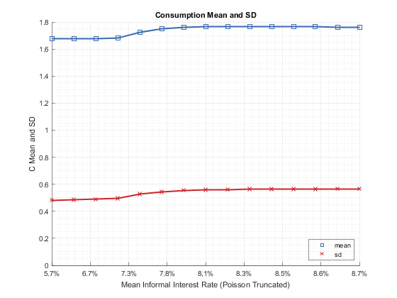 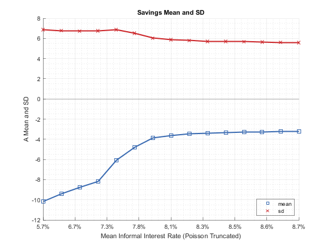 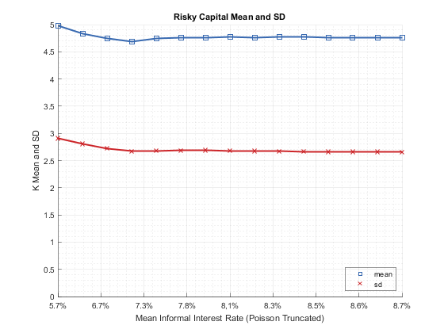 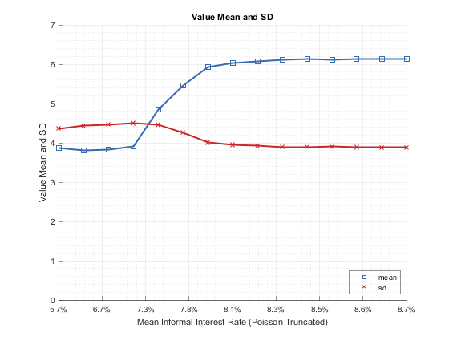 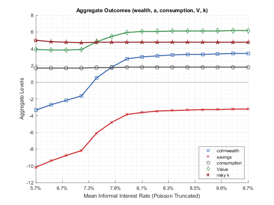 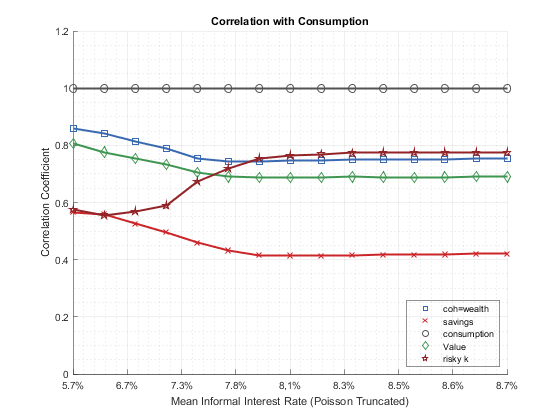 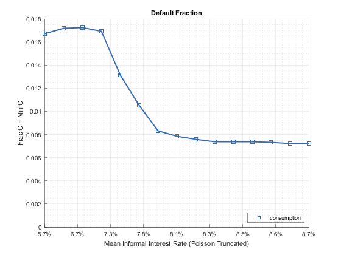 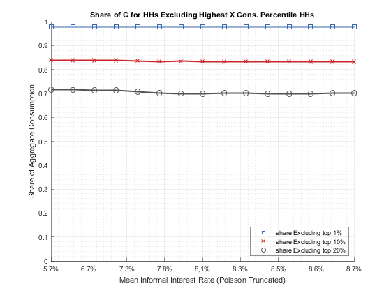 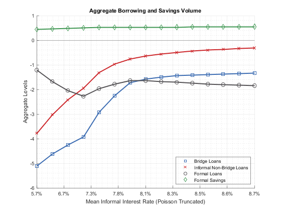 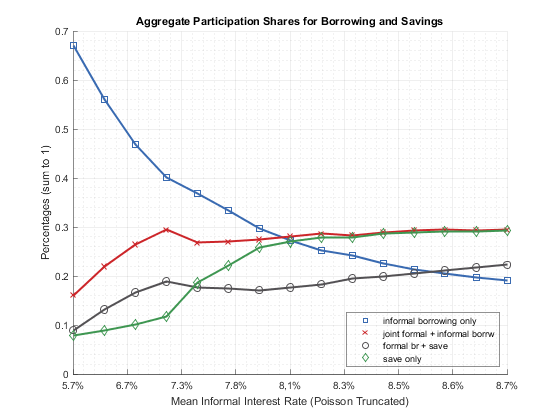 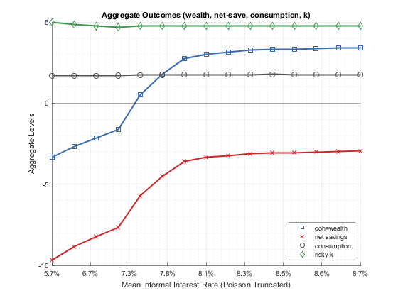 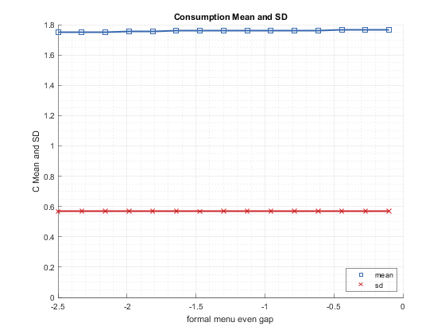 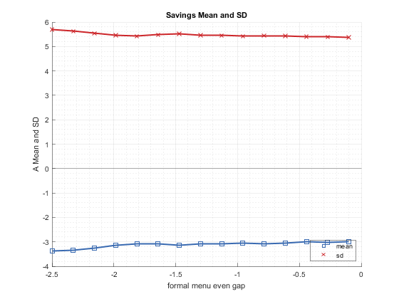 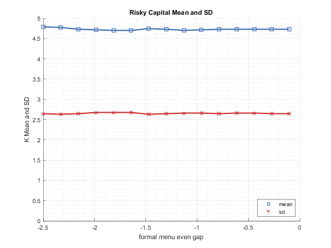 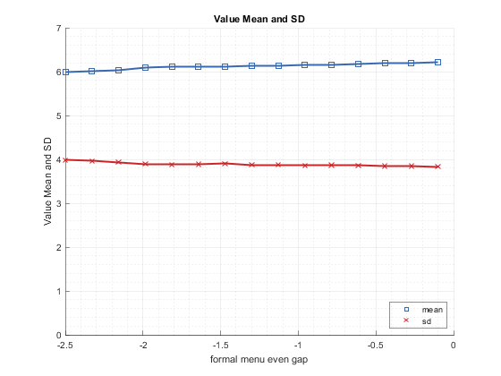 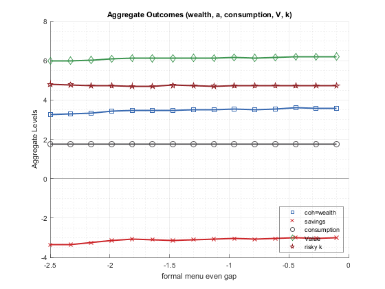 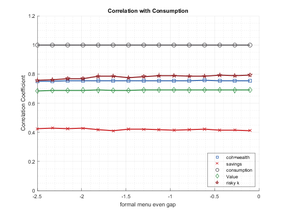 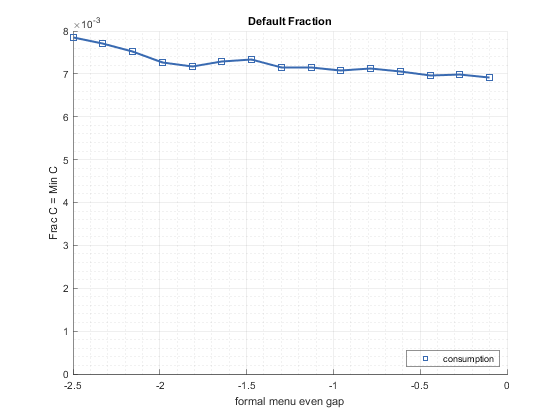 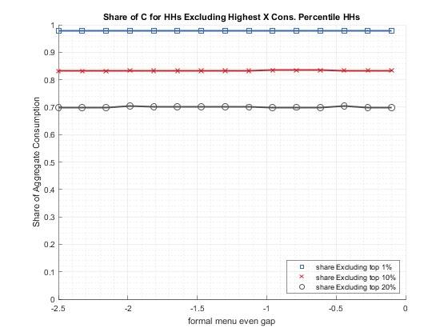 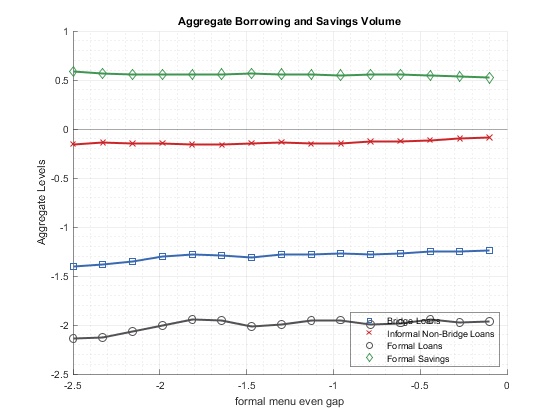 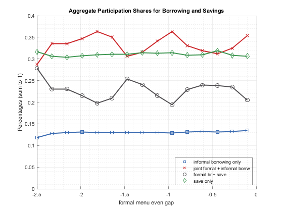 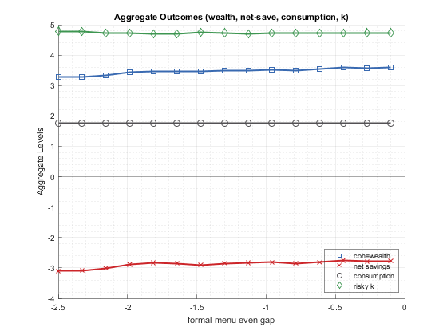 Medium GRID Simulation (GRID Limited Graphs)
it_size_type = 3; ar_it_plot_sets = [3,4,102, 152,104,106]; bl_simu_cross = 'g';
% Simulate along parameters ff_az_test_analyze( ... ar_it_plot_sets, bl_simu_cross, it_size_type, cl_st_param_keys, ... param_map, support_map, param_tstar_map);
close all
Denser CROSS Simulation
it_size_type = 3; ar_it_plot_sets = [51,52,53,54, 5,6,103,153, 61,62,63,64]; bl_simu_cross = 'c';
% Simulate along parameters ff_az_test_analyze( ... ar_it_plot_sets, bl_simu_cross, it_size_type, cl_st_param_keys, ... param_map, support_map, param_tstar_map);
close all;
Denser GRID Simulation
it_size_type = 3; ar_it_plot_sets = [1,2,101,151, 3,4,102,152, 5,6,103,153, 51,52,53,54, 201,205,207,209, 104,105,106,10]; bl_simu_cross = 'g';
% Simulate along parameters ff_az_test_analyze( ... ar_it_plot_sets, bl_simu_cross, it_size_type, cl_st_param_keys, ... param_map, support_map, param_tstar_map);
close all